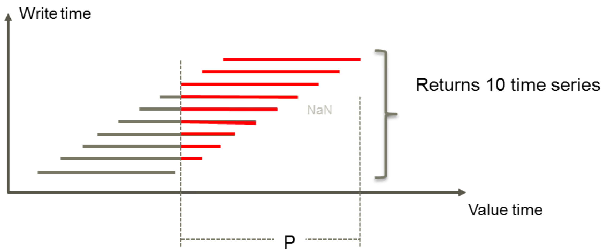

API documentation¶
The Mesh Python API contains several packages, namespaces and modules.
volue.mesh.proto.core.v1alpha¶
Client and server classes corresponding to protobuf-defined services.
- class volue.mesh.proto.core.v1alpha.core_pb2_grpc.MeshService[source]¶
Mesh server service
The Mesh service is an API for interacting with a running Mesh server, also called just Mesh.
Authentication
When Mesh is configured to require authentication an access token is necessary for most calls. You can acquire an access token through Kerberos authentication as described above the AuthenticateKerberos method. Access tokens are passed in the Authorization metadata field of each RPC with the format Bearer <access token>.
Many gRPC libraries provide call credential types that correctly pass the access token to the server, for example grpc::AccessTokenCredentials in C++. These mechanisms will generally take the bare access token (without Bearer), and create the Bearer <access token> string internally.
Access tokens expire after an hour and should be refreshed before then. Getting a new token early, for example after half the expiration time, is recommended.
- static AuthenticateFake(request, target, options=(), channel_credentials=None, call_credentials=None, insecure=False, compression=None, wait_for_ready=None, timeout=None, metadata=None)[source]¶
- static AuthenticateKerberos(request_iterator, target, options=(), channel_credentials=None, call_credentials=None, insecure=False, compression=None, wait_for_ready=None, timeout=None, metadata=None)[source]¶
- static Commit(request, target, options=(), channel_credentials=None, call_credentials=None, insecure=False, compression=None, wait_for_ready=None, timeout=None, metadata=None)[source]¶
- static CreateObject(request, target, options=(), channel_credentials=None, call_credentials=None, insecure=False, compression=None, wait_for_ready=None, timeout=None, metadata=None)[source]¶
- static DeleteObject(request, target, options=(), channel_credentials=None, call_credentials=None, insecure=False, compression=None, wait_for_ready=None, timeout=None, metadata=None)[source]¶
- static EndSession(request, target, options=(), channel_credentials=None, call_credentials=None, insecure=False, compression=None, wait_for_ready=None, timeout=None, metadata=None)[source]¶
- static GetAttribute(request, target, options=(), channel_credentials=None, call_credentials=None, insecure=False, compression=None, wait_for_ready=None, timeout=None, metadata=None)[source]¶
- static GetObject(request, target, options=(), channel_credentials=None, call_credentials=None, insecure=False, compression=None, wait_for_ready=None, timeout=None, metadata=None)[source]¶
- static GetTimeseriesAttribute(request, target, options=(), channel_credentials=None, call_credentials=None, insecure=False, compression=None, wait_for_ready=None, timeout=None, metadata=None)[source]¶
- static GetTimeseriesEntry(request, target, options=(), channel_credentials=None, call_credentials=None, insecure=False, compression=None, wait_for_ready=None, timeout=None, metadata=None)[source]¶
- static GetUserIdentity(request, target, options=(), channel_credentials=None, call_credentials=None, insecure=False, compression=None, wait_for_ready=None, timeout=None, metadata=None)[source]¶
- static GetVersion(request, target, options=(), channel_credentials=None, call_credentials=None, insecure=False, compression=None, wait_for_ready=None, timeout=None, metadata=None)[source]¶
- static ReadTimeseries(request, target, options=(), channel_credentials=None, call_credentials=None, insecure=False, compression=None, wait_for_ready=None, timeout=None, metadata=None)[source]¶
- static RevokeAccessToken(request, target, options=(), channel_credentials=None, call_credentials=None, insecure=False, compression=None, wait_for_ready=None, timeout=None, metadata=None)[source]¶
- static Rollback(request, target, options=(), channel_credentials=None, call_credentials=None, insecure=False, compression=None, wait_for_ready=None, timeout=None, metadata=None)[source]¶
- static RunCalculation(request, target, options=(), channel_credentials=None, call_credentials=None, insecure=False, compression=None, wait_for_ready=None, timeout=None, metadata=None)[source]¶
- static SearchAttributes(request, target, options=(), channel_credentials=None, call_credentials=None, insecure=False, compression=None, wait_for_ready=None, timeout=None, metadata=None)[source]¶
- static SearchObjects(request, target, options=(), channel_credentials=None, call_credentials=None, insecure=False, compression=None, wait_for_ready=None, timeout=None, metadata=None)[source]¶
- static SearchTimeseriesAttributes(request, target, options=(), channel_credentials=None, call_credentials=None, insecure=False, compression=None, wait_for_ready=None, timeout=None, metadata=None)[source]¶
- static StartSession(request, target, options=(), channel_credentials=None, call_credentials=None, insecure=False, compression=None, wait_for_ready=None, timeout=None, metadata=None)[source]¶
- static UpdateAttribute(request, target, options=(), channel_credentials=None, call_credentials=None, insecure=False, compression=None, wait_for_ready=None, timeout=None, metadata=None)[source]¶
- static UpdateObject(request, target, options=(), channel_credentials=None, call_credentials=None, insecure=False, compression=None, wait_for_ready=None, timeout=None, metadata=None)[source]¶
- static UpdateTimeseriesAttribute(request, target, options=(), channel_credentials=None, call_credentials=None, insecure=False, compression=None, wait_for_ready=None, timeout=None, metadata=None)[source]¶
- class volue.mesh.proto.core.v1alpha.core_pb2_grpc.MeshServiceServicer[source]¶
Mesh server service
The Mesh service is an API for interacting with a running Mesh server, also called just Mesh.
Authentication
When Mesh is configured to require authentication an access token is necessary for most calls. You can acquire an access token through Kerberos authentication as described above the AuthenticateKerberos method. Access tokens are passed in the Authorization metadata field of each RPC with the format Bearer <access token>.
Many gRPC libraries provide call credential types that correctly pass the access token to the server, for example grpc::AccessTokenCredentials in C++. These mechanisms will generally take the bare access token (without Bearer), and create the Bearer <access token> string internally.
Access tokens expire after an hour and should be refreshed before then. Getting a new token early, for example after half the expiration time, is recommended.
- AuthenticateFake(request, context)[source]¶
Missing associated documentation comment in .proto file.
- AuthenticateKerberos(request_iterator, context)[source]¶
Authenticate using Kerberos
Perform a potentially multi-leg Kerberos authentication where the client and the server sends Kerberos tickets back and forth until a complete security context is established or an error occurs.
On success the final response from the server will contain a bearer token that should be used as a token in calls that require authorization, as well as the expiration time for that token.
- CreateObject(request, context)[source]¶
Create new object in the model. In the first step user sets owner and name of the new object. In case of success, the create operation returns OK status and newly created object with all of the attributes set to default values. Then the user may update the attributes and call UpdateAttribute RPC. Note: Returned object has all attributes (no mask applied) and AttributeView::BASIC.
- GetTimeseriesAttribute(request, context)[source]¶
When a timeseries, either calculated or not, is linked to a node in a Mesh model, some meta data associated with the Mesh model node can be retrieved. This kind of metadata is called attribute data.
- GetTimeseriesEntry(request, context)[source]¶
Other timeseries might not be connected to a Mesh model at all, but instead be organized in some sort of catalog structure. This kind of metadata is called entry data.
- GetUserIdentity(request, context)[source]¶
Returns the identity that was used to create the access token authorizing this call.
- ReadTimeseries(request, context)[source]¶
Timeseries
In its simplest form a timeseries is just a table of timestamps, flags and values. Timeseries can be organized and generated in different ways. Some timeseries are retrieved ‘as is’ from the database where they are stored, while others are generated using calculations which can be based on an arbitrary set of data. Timeseries can be organized in a structure which resembles catalogs and thus can have a path associated with it. They can also potentially be linked to a node in a Mesh model and with that get a path that represents the nodes position in the Mesh model. More meta data like unit of measurement, curve type and so on can also be linked to the timeseries.
Get a series of timestamps, flags and values.
- RevokeAccessToken(request, context)[source]¶
Revoke an access token received from AuthenticateKerberos, causing it to become immediately unusable. If the RPC returns without error the operation succeeded or the token does not exist.
- Rollback(request, context)[source]¶
Rollback changes that are in the server’s session but not in the database yet.
- SearchAttributes(request, context)[source]¶
Search for attributes from the model. The search uses Mesh’s query language, which is the same language that’s used in for example Nimbus.
The result stream is not ordered in any particular way, and the caller should not expect the ordering of search results to be stable.
If the search doesn’t find any results an empty stream and an OK status is returned.
- SearchObjects(request, context)[source]¶
Search for objects from the model. The search uses Mesh’s query language, which is the same language that’s used in for example Nimbus.
The result stream is not ordered in any particular way, and the caller should not expect the ordering of search results to be stable.
If the search doesn’t find any results an empty stream and an OK status is returned.
- SearchTimeseriesAttributes(request, context)[source]¶
Search for timeseries attributes in a given physical model
The search uses Mesh’s query language, which is the same language that’s used in for example Nimbus.
The result stream is not ordered in any particular way, and the caller should not expect the ordering of search results to be stable.
Returns an error if:
the session doesn’t exist,
the model doesn’t exist,
the start object doesn’t exist, or
the search query is invalid.
If the search doesn’t find any results an empty stream and an OK status is returned.
- StartSession(request, context)[source]¶
Sessions
To work with data inside a Mesh server you need to create a workspace which is called a session. Here you can have changes and calculations pending which won’t be visible to other users of the Mesh server until you commit them.
Start a Mesh session on the server, return the id of the session.
- class volue.mesh.proto.core.v1alpha.core_pb2_grpc.MeshServiceStub(channel)[source]¶
Mesh server service
The Mesh service is an API for interacting with a running Mesh server, also called just Mesh.
Authentication
When Mesh is configured to require authentication an access token is necessary for most calls. You can acquire an access token through Kerberos authentication as described above the AuthenticateKerberos method. Access tokens are passed in the Authorization metadata field of each RPC with the format Bearer <access token>.
Many gRPC libraries provide call credential types that correctly pass the access token to the server, for example grpc::AccessTokenCredentials in C++. These mechanisms will generally take the bare access token (without Bearer), and create the Bearer <access token> string internally.
Access tokens expire after an hour and should be refreshed before then. Getting a new token early, for example after half the expiration time, is recommended.
- volue.mesh.proto.core.v1alpha.core_pb2_grpc.add_MeshServiceServicer_to_server(servicer, server)[source]¶
Generated protocol buffer code.
- class volue.mesh.proto.core.v1alpha.core_pb2.Attribute¶
- DESCRIPTOR = <google.protobuf.pyext._message.MessageDescriptor object>¶
The
google.protobuf.descriptor.Descriptorfor this message type.
- collection_values¶
Field volue.mesh.grpc.core.v1alpha.Attribute.collection_values
- definition¶
Field volue.mesh.grpc.core.v1alpha.Attribute.definition
- id¶
Field volue.mesh.grpc.core.v1alpha.Attribute.id
- name¶
Field volue.mesh.grpc.core.v1alpha.Attribute.name
- path¶
Field volue.mesh.grpc.core.v1alpha.Attribute.path
- singular_value¶
Field volue.mesh.grpc.core.v1alpha.Attribute.singular_value
- class volue.mesh.proto.core.v1alpha.core_pb2.AttributeDefinition¶
- DESCRIPTOR = <google.protobuf.pyext._message.MessageDescriptor object>¶
The
google.protobuf.descriptor.Descriptorfor this message type.
- boolean_definition¶
Field volue.mesh.grpc.core.v1alpha.AttributeDefinition.boolean_definition
- description¶
Field volue.mesh.grpc.core.v1alpha.AttributeDefinition.description
- double_definition¶
Field volue.mesh.grpc.core.v1alpha.AttributeDefinition.double_definition
- id¶
Field volue.mesh.grpc.core.v1alpha.AttributeDefinition.id
- int_definition¶
Field volue.mesh.grpc.core.v1alpha.AttributeDefinition.int_definition
- maximum_cardinality¶
Field volue.mesh.grpc.core.v1alpha.AttributeDefinition.maximum_cardinality
- minimum_cardinality¶
Field volue.mesh.grpc.core.v1alpha.AttributeDefinition.minimum_cardinality
- name¶
Field volue.mesh.grpc.core.v1alpha.AttributeDefinition.name
- name_space¶
Field volue.mesh.grpc.core.v1alpha.AttributeDefinition.name_space
- path¶
Field volue.mesh.grpc.core.v1alpha.AttributeDefinition.path
- rating_curve_definition¶
Field volue.mesh.grpc.core.v1alpha.AttributeDefinition.rating_curve_definition
- relationship_definition¶
Field volue.mesh.grpc.core.v1alpha.AttributeDefinition.relationship_definition
- string_definition¶
Field volue.mesh.grpc.core.v1alpha.AttributeDefinition.string_definition
- tags¶
Field volue.mesh.grpc.core.v1alpha.AttributeDefinition.tags
- timeseries_definition¶
Field volue.mesh.grpc.core.v1alpha.AttributeDefinition.timeseries_definition
- utc_time_definition¶
Field volue.mesh.grpc.core.v1alpha.AttributeDefinition.utc_time_definition
- value_type¶
Field volue.mesh.grpc.core.v1alpha.AttributeDefinition.value_type
- xy_table_definition¶
Field volue.mesh.grpc.core.v1alpha.AttributeDefinition.xy_table_definition
- class volue.mesh.proto.core.v1alpha.core_pb2.AttributeId¶
- DESCRIPTOR = <google.protobuf.pyext._message.MessageDescriptor object>¶
The
google.protobuf.descriptor.Descriptorfor this message type.
- id¶
Field volue.mesh.grpc.core.v1alpha.AttributeId.id
- path¶
Field volue.mesh.grpc.core.v1alpha.AttributeId.path
- class volue.mesh.proto.core.v1alpha.core_pb2.AttributeValue¶
- DESCRIPTOR = <google.protobuf.pyext._message.MessageDescriptor object>¶
The
google.protobuf.descriptor.Descriptorfor this message type.
- boolean_value¶
Field volue.mesh.grpc.core.v1alpha.AttributeValue.boolean_value
- double_value¶
Field volue.mesh.grpc.core.v1alpha.AttributeValue.double_value
- int_value¶
Field volue.mesh.grpc.core.v1alpha.AttributeValue.int_value
- rating_curve_value¶
Field volue.mesh.grpc.core.v1alpha.AttributeValue.rating_curve_value
- string_value¶
Field volue.mesh.grpc.core.v1alpha.AttributeValue.string_value
- timeseries_value¶
Field volue.mesh.grpc.core.v1alpha.AttributeValue.timeseries_value
- utc_time_value¶
Field volue.mesh.grpc.core.v1alpha.AttributeValue.utc_time_value
- xy_table_value¶
Field volue.mesh.grpc.core.v1alpha.AttributeValue.xy_table_value
- class volue.mesh.proto.core.v1alpha.core_pb2.AttributesMasks¶
- DESCRIPTOR = <google.protobuf.pyext._message.MessageDescriptor object>¶
The
google.protobuf.descriptor.Descriptorfor this message type.
- name_mask¶
Field volue.mesh.grpc.core.v1alpha.AttributesMasks.name_mask
- namespace_mask¶
Field volue.mesh.grpc.core.v1alpha.AttributesMasks.namespace_mask
- return_no_attributes¶
Field volue.mesh.grpc.core.v1alpha.AttributesMasks.return_no_attributes
- tag_mask¶
Field volue.mesh.grpc.core.v1alpha.AttributesMasks.tag_mask
- class volue.mesh.proto.core.v1alpha.core_pb2.AuthenticateFakeRequest¶
- DESCRIPTOR = <google.protobuf.pyext._message.MessageDescriptor object>¶
The
google.protobuf.descriptor.Descriptorfor this message type.
- display_name¶
Field volue.mesh.grpc.core.v1alpha.AuthenticateFakeRequest.display_name
- token_duration¶
Field volue.mesh.grpc.core.v1alpha.AuthenticateFakeRequest.token_duration
- class volue.mesh.proto.core.v1alpha.core_pb2.AuthenticateFakeResponse¶
- DESCRIPTOR = <google.protobuf.pyext._message.MessageDescriptor object>¶
The
google.protobuf.descriptor.Descriptorfor this message type.
- bearer_token¶
Field volue.mesh.grpc.core.v1alpha.AuthenticateFakeResponse.bearer_token
- token_duration¶
Field volue.mesh.grpc.core.v1alpha.AuthenticateFakeResponse.token_duration
- class volue.mesh.proto.core.v1alpha.core_pb2.AuthenticateKerberosResponse¶
- DESCRIPTOR = <google.protobuf.pyext._message.MessageDescriptor object>¶
The
google.protobuf.descriptor.Descriptorfor this message type.
- bearer_token¶
Field volue.mesh.grpc.core.v1alpha.AuthenticateKerberosResponse.bearer_token
- kerberos_token¶
Field volue.mesh.grpc.core.v1alpha.AuthenticateKerberosResponse.kerberos_token
- token_duration¶
Field volue.mesh.grpc.core.v1alpha.AuthenticateKerberosResponse.token_duration
- class volue.mesh.proto.core.v1alpha.core_pb2.BooleanAttributeDefinition¶
- DESCRIPTOR = <google.protobuf.pyext._message.MessageDescriptor object>¶
The
google.protobuf.descriptor.Descriptorfor this message type.
- default_value¶
Field volue.mesh.grpc.core.v1alpha.BooleanAttributeDefinition.default_value
- class volue.mesh.proto.core.v1alpha.core_pb2.CalculationRequest¶
- DESCRIPTOR = <google.protobuf.pyext._message.MessageDescriptor object>¶
The
google.protobuf.descriptor.Descriptorfor this message type.
- expression¶
Field volue.mesh.grpc.core.v1alpha.CalculationRequest.expression
- interval¶
Field volue.mesh.grpc.core.v1alpha.CalculationRequest.interval
- relative_to¶
Field volue.mesh.grpc.core.v1alpha.CalculationRequest.relative_to
- session_id¶
Field volue.mesh.grpc.core.v1alpha.CalculationRequest.session_id
- class volue.mesh.proto.core.v1alpha.core_pb2.CalculationResponse¶
- DESCRIPTOR = <google.protobuf.pyext._message.MessageDescriptor object>¶
The
google.protobuf.descriptor.Descriptorfor this message type.
- numeric_results¶
Field volue.mesh.grpc.core.v1alpha.CalculationResponse.numeric_results
- string_results¶
Field volue.mesh.grpc.core.v1alpha.CalculationResponse.string_results
- timeseries_results¶
Field volue.mesh.grpc.core.v1alpha.CalculationResponse.timeseries_results
- class volue.mesh.proto.core.v1alpha.core_pb2.CommitResponse¶
- DESCRIPTOR = <google.protobuf.pyext._message.MessageDescriptor object>¶
The
google.protobuf.descriptor.Descriptorfor this message type.
- class volue.mesh.proto.core.v1alpha.core_pb2.CreateObjectRequest¶
- DESCRIPTOR = <google.protobuf.pyext._message.MessageDescriptor object>¶
The
google.protobuf.descriptor.Descriptorfor this message type.
- name¶
Field volue.mesh.grpc.core.v1alpha.CreateObjectRequest.name
- owner_id¶
Field volue.mesh.grpc.core.v1alpha.CreateObjectRequest.owner_id
- session_id¶
Field volue.mesh.grpc.core.v1alpha.CreateObjectRequest.session_id
- class volue.mesh.proto.core.v1alpha.core_pb2.DeleteObjectRequest¶
- DESCRIPTOR = <google.protobuf.pyext._message.MessageDescriptor object>¶
The
google.protobuf.descriptor.Descriptorfor this message type.
- object_id¶
Field volue.mesh.grpc.core.v1alpha.DeleteObjectRequest.object_id
- recursive_delete¶
Field volue.mesh.grpc.core.v1alpha.DeleteObjectRequest.recursive_delete
- session_id¶
Field volue.mesh.grpc.core.v1alpha.DeleteObjectRequest.session_id
- class volue.mesh.proto.core.v1alpha.core_pb2.DeleteObjectResponse¶
- DESCRIPTOR = <google.protobuf.pyext._message.MessageDescriptor object>¶
The
google.protobuf.descriptor.Descriptorfor this message type.
- class volue.mesh.proto.core.v1alpha.core_pb2.DoubleAttributeDefinition¶
- DESCRIPTOR = <google.protobuf.pyext._message.MessageDescriptor object>¶
The
google.protobuf.descriptor.Descriptorfor this message type.
- default_value¶
Field volue.mesh.grpc.core.v1alpha.DoubleAttributeDefinition.default_value
- maximum_value¶
Field volue.mesh.grpc.core.v1alpha.DoubleAttributeDefinition.maximum_value
- minimum_value¶
Field volue.mesh.grpc.core.v1alpha.DoubleAttributeDefinition.minimum_value
- unit_of_measurement¶
Field volue.mesh.grpc.core.v1alpha.DoubleAttributeDefinition.unit_of_measurement
- class volue.mesh.proto.core.v1alpha.core_pb2.EndSessionResponse¶
- DESCRIPTOR = <google.protobuf.pyext._message.MessageDescriptor object>¶
The
google.protobuf.descriptor.Descriptorfor this message type.
- class volue.mesh.proto.core.v1alpha.core_pb2.GetAttributeRequest¶
- DESCRIPTOR = <google.protobuf.pyext._message.MessageDescriptor object>¶
The
google.protobuf.descriptor.Descriptorfor this message type.
- attribute_id¶
Field volue.mesh.grpc.core.v1alpha.GetAttributeRequest.attribute_id
- attribute_view¶
Field volue.mesh.grpc.core.v1alpha.GetAttributeRequest.attribute_view
- session_id¶
Field volue.mesh.grpc.core.v1alpha.GetAttributeRequest.session_id
- class volue.mesh.proto.core.v1alpha.core_pb2.GetObjectRequest¶
- DESCRIPTOR = <google.protobuf.pyext._message.MessageDescriptor object>¶
The
google.protobuf.descriptor.Descriptorfor this message type.
- attribute_view¶
Field volue.mesh.grpc.core.v1alpha.GetObjectRequest.attribute_view
- attributes_masks¶
Field volue.mesh.grpc.core.v1alpha.GetObjectRequest.attributes_masks
- object_id¶
Field volue.mesh.grpc.core.v1alpha.GetObjectRequest.object_id
- session_id¶
Field volue.mesh.grpc.core.v1alpha.GetObjectRequest.session_id
- class volue.mesh.proto.core.v1alpha.core_pb2.GetTimeseriesAttributeRequest¶
- DESCRIPTOR = <google.protobuf.pyext._message.MessageDescriptor object>¶
The
google.protobuf.descriptor.Descriptorfor this message type.
- attribute_id¶
Field volue.mesh.grpc.core.v1alpha.GetTimeseriesAttributeRequest.attribute_id
- model¶
Field volue.mesh.grpc.core.v1alpha.GetTimeseriesAttributeRequest.model
- session_id¶
Field volue.mesh.grpc.core.v1alpha.GetTimeseriesAttributeRequest.session_id
- class volue.mesh.proto.core.v1alpha.core_pb2.GetTimeseriesEntryRequest¶
- DESCRIPTOR = <google.protobuf.pyext._message.MessageDescriptor object>¶
The
google.protobuf.descriptor.Descriptorfor this message type.
- entry_id¶
Field volue.mesh.grpc.core.v1alpha.GetTimeseriesEntryRequest.entry_id
- session_id¶
Field volue.mesh.grpc.core.v1alpha.GetTimeseriesEntryRequest.session_id
- class volue.mesh.proto.core.v1alpha.core_pb2.Int64AttributeDefinition¶
- DESCRIPTOR = <google.protobuf.pyext._message.MessageDescriptor object>¶
The
google.protobuf.descriptor.Descriptorfor this message type.
- default_value¶
Field volue.mesh.grpc.core.v1alpha.Int64AttributeDefinition.default_value
- maximum_value¶
Field volue.mesh.grpc.core.v1alpha.Int64AttributeDefinition.maximum_value
- minimum_value¶
Field volue.mesh.grpc.core.v1alpha.Int64AttributeDefinition.minimum_value
- unit_of_measurement¶
Field volue.mesh.grpc.core.v1alpha.Int64AttributeDefinition.unit_of_measurement
- class volue.mesh.proto.core.v1alpha.core_pb2.MeshId¶
- DESCRIPTOR = <google.protobuf.pyext._message.MessageDescriptor object>¶
The
google.protobuf.descriptor.Descriptorfor this message type.
- id¶
Field volue.mesh.grpc.core.v1alpha.MeshId.id
- path¶
Field volue.mesh.grpc.core.v1alpha.MeshId.path
- timeseries_key¶
Field volue.mesh.grpc.core.v1alpha.MeshId.timeseries_key
- class volue.mesh.proto.core.v1alpha.core_pb2.NumericResults¶
- DESCRIPTOR = <google.protobuf.pyext._message.MessageDescriptor object>¶
The
google.protobuf.descriptor.Descriptorfor this message type.
- value¶
Field volue.mesh.grpc.core.v1alpha.NumericResults.value
- class volue.mesh.proto.core.v1alpha.core_pb2.Object¶
- DESCRIPTOR = <google.protobuf.pyext._message.MessageDescriptor object>¶
The
google.protobuf.descriptor.Descriptorfor this message type.
- attributes¶
Field volue.mesh.grpc.core.v1alpha.Object.attributes
- id¶
Field volue.mesh.grpc.core.v1alpha.Object.id
- name¶
Field volue.mesh.grpc.core.v1alpha.Object.name
- owner_id¶
Field volue.mesh.grpc.core.v1alpha.Object.owner_id
- path¶
Field volue.mesh.grpc.core.v1alpha.Object.path
- type_name¶
Field volue.mesh.grpc.core.v1alpha.Object.type_name
- class volue.mesh.proto.core.v1alpha.core_pb2.ObjectId¶
- DESCRIPTOR = <google.protobuf.pyext._message.MessageDescriptor object>¶
The
google.protobuf.descriptor.Descriptorfor this message type.
- full_name¶
Field volue.mesh.grpc.core.v1alpha.ObjectId.full_name
- guid¶
Field volue.mesh.grpc.core.v1alpha.ObjectId.guid
- timskey¶
Field volue.mesh.grpc.core.v1alpha.ObjectId.timskey
- class volue.mesh.proto.core.v1alpha.core_pb2.RatingCurveAttributeDefinition¶
- DESCRIPTOR = <google.protobuf.pyext._message.MessageDescriptor object>¶
The
google.protobuf.descriptor.Descriptorfor this message type.
- class volue.mesh.proto.core.v1alpha.core_pb2.RatingCurveAttributeValue¶
- DESCRIPTOR = <google.protobuf.pyext._message.MessageDescriptor object>¶
The
google.protobuf.descriptor.Descriptorfor this message type.
- class volue.mesh.proto.core.v1alpha.core_pb2.ReadTimeseriesRequest¶
- DESCRIPTOR = <google.protobuf.pyext._message.MessageDescriptor object>¶
The
google.protobuf.descriptor.Descriptorfor this message type.
- interval¶
Field volue.mesh.grpc.core.v1alpha.ReadTimeseriesRequest.interval
- object_id¶
Field volue.mesh.grpc.core.v1alpha.ReadTimeseriesRequest.object_id
- session_id¶
Field volue.mesh.grpc.core.v1alpha.ReadTimeseriesRequest.session_id
- class volue.mesh.proto.core.v1alpha.core_pb2.ReadTimeseriesResponse¶
- DESCRIPTOR = <google.protobuf.pyext._message.MessageDescriptor object>¶
The
google.protobuf.descriptor.Descriptorfor this message type.
- timeseries¶
Field volue.mesh.grpc.core.v1alpha.ReadTimeseriesResponse.timeseries
- class volue.mesh.proto.core.v1alpha.core_pb2.RelationshipAttributeDefinition¶
- DESCRIPTOR = <google.protobuf.pyext._message.MessageDescriptor object>¶
The
google.protobuf.descriptor.Descriptorfor this message type.
- object_type¶
Field volue.mesh.grpc.core.v1alpha.RelationshipAttributeDefinition.object_type
- class volue.mesh.proto.core.v1alpha.core_pb2.RevokeAccessTokenResponse¶
- DESCRIPTOR = <google.protobuf.pyext._message.MessageDescriptor object>¶
The
google.protobuf.descriptor.Descriptorfor this message type.
- class volue.mesh.proto.core.v1alpha.core_pb2.RollbackResponse¶
- DESCRIPTOR = <google.protobuf.pyext._message.MessageDescriptor object>¶
The
google.protobuf.descriptor.Descriptorfor this message type.
- class volue.mesh.proto.core.v1alpha.core_pb2.SearchAttributesRequest¶
- DESCRIPTOR = <google.protobuf.pyext._message.MessageDescriptor object>¶
The
google.protobuf.descriptor.Descriptorfor this message type.
- attribute_view¶
Field volue.mesh.grpc.core.v1alpha.SearchAttributesRequest.attribute_view
- query¶
Field volue.mesh.grpc.core.v1alpha.SearchAttributesRequest.query
- session_id¶
Field volue.mesh.grpc.core.v1alpha.SearchAttributesRequest.session_id
- start_object_id¶
Field volue.mesh.grpc.core.v1alpha.SearchAttributesRequest.start_object_id
- class volue.mesh.proto.core.v1alpha.core_pb2.SearchObjectsRequest¶
- DESCRIPTOR = <google.protobuf.pyext._message.MessageDescriptor object>¶
The
google.protobuf.descriptor.Descriptorfor this message type.
- attribute_view¶
Field volue.mesh.grpc.core.v1alpha.SearchObjectsRequest.attribute_view
- attributes_masks¶
Field volue.mesh.grpc.core.v1alpha.SearchObjectsRequest.attributes_masks
- query¶
Field volue.mesh.grpc.core.v1alpha.SearchObjectsRequest.query
- session_id¶
Field volue.mesh.grpc.core.v1alpha.SearchObjectsRequest.session_id
- start_object_id¶
Field volue.mesh.grpc.core.v1alpha.SearchObjectsRequest.start_object_id
- class volue.mesh.proto.core.v1alpha.core_pb2.SearchTimeseriesAttributesRequest¶
- DESCRIPTOR = <google.protobuf.pyext._message.MessageDescriptor object>¶
The
google.protobuf.descriptor.Descriptorfor this message type.
- model_name¶
Field volue.mesh.grpc.core.v1alpha.SearchTimeseriesAttributesRequest.model_name
- query¶
Field volue.mesh.grpc.core.v1alpha.SearchTimeseriesAttributesRequest.query
- session_id¶
Field volue.mesh.grpc.core.v1alpha.SearchTimeseriesAttributesRequest.session_id
- start_object_guid¶
Field volue.mesh.grpc.core.v1alpha.SearchTimeseriesAttributesRequest.start_object_guid
- start_object_path¶
Field volue.mesh.grpc.core.v1alpha.SearchTimeseriesAttributesRequest.start_object_path
- class volue.mesh.proto.core.v1alpha.core_pb2.StringAttributeDefinition¶
- DESCRIPTOR = <google.protobuf.pyext._message.MessageDescriptor object>¶
The
google.protobuf.descriptor.Descriptorfor this message type.
- default_value¶
Field volue.mesh.grpc.core.v1alpha.StringAttributeDefinition.default_value
- class volue.mesh.proto.core.v1alpha.core_pb2.StringResults¶
- DESCRIPTOR = <google.protobuf.pyext._message.MessageDescriptor object>¶
The
google.protobuf.descriptor.Descriptorfor this message type.
- value¶
Field volue.mesh.grpc.core.v1alpha.StringResults.value
- class volue.mesh.proto.core.v1alpha.core_pb2.Timeseries¶
- DESCRIPTOR = <google.protobuf.pyext._message.MessageDescriptor object>¶
The
google.protobuf.descriptor.Descriptorfor this message type.
- data¶
Field volue.mesh.grpc.core.v1alpha.Timeseries.data
- interval¶
Field volue.mesh.grpc.core.v1alpha.Timeseries.interval
- object_id¶
Field volue.mesh.grpc.core.v1alpha.Timeseries.object_id
- resolution¶
Field volue.mesh.grpc.core.v1alpha.Timeseries.resolution
- class volue.mesh.proto.core.v1alpha.core_pb2.TimeseriesAttribute¶
- DESCRIPTOR = <google.protobuf.pyext._message.MessageDescriptor object>¶
The
google.protobuf.descriptor.Descriptorfor this message type.
- entry¶
Field volue.mesh.grpc.core.v1alpha.TimeseriesAttribute.entry
- id¶
Field volue.mesh.grpc.core.v1alpha.TimeseriesAttribute.id
- local_expression¶
Field volue.mesh.grpc.core.v1alpha.TimeseriesAttribute.local_expression
- path¶
Field volue.mesh.grpc.core.v1alpha.TimeseriesAttribute.path
- template_expression¶
Field volue.mesh.grpc.core.v1alpha.TimeseriesAttribute.template_expression
- class volue.mesh.proto.core.v1alpha.core_pb2.TimeseriesAttributeDefinition¶
- DESCRIPTOR = <google.protobuf.pyext._message.MessageDescriptor object>¶
The
google.protobuf.descriptor.Descriptorfor this message type.
- template_expression¶
Field volue.mesh.grpc.core.v1alpha.TimeseriesAttributeDefinition.template_expression
- class volue.mesh.proto.core.v1alpha.core_pb2.TimeseriesAttributeValue¶
- DESCRIPTOR = <google.protobuf.pyext._message.MessageDescriptor object>¶
The
google.protobuf.descriptor.Descriptorfor this message type.
- expression¶
Field volue.mesh.grpc.core.v1alpha.TimeseriesAttributeValue.expression
- is_local_expression¶
Field volue.mesh.grpc.core.v1alpha.TimeseriesAttributeValue.is_local_expression
- time_series_resource_id¶
Field volue.mesh.grpc.core.v1alpha.TimeseriesAttributeValue.time_series_resource_id
- class volue.mesh.proto.core.v1alpha.core_pb2.TimeseriesEntry¶
- DESCRIPTOR = <google.protobuf.pyext._message.MessageDescriptor object>¶
The
google.protobuf.descriptor.Descriptorfor this message type.
- curve_type¶
Field volue.mesh.grpc.core.v1alpha.TimeseriesEntry.curve_type
- id¶
Field volue.mesh.grpc.core.v1alpha.TimeseriesEntry.id
- path¶
Field volue.mesh.grpc.core.v1alpha.TimeseriesEntry.path
- resolution¶
Field volue.mesh.grpc.core.v1alpha.TimeseriesEntry.resolution
- temporary¶
Field volue.mesh.grpc.core.v1alpha.TimeseriesEntry.temporary
- timeseries_key¶
Field volue.mesh.grpc.core.v1alpha.TimeseriesEntry.timeseries_key
- unit_of_measurement¶
Field volue.mesh.grpc.core.v1alpha.TimeseriesEntry.unit_of_measurement
- class volue.mesh.proto.core.v1alpha.core_pb2.TimeseriesEntryId¶
- DESCRIPTOR = <google.protobuf.pyext._message.MessageDescriptor object>¶
The
google.protobuf.descriptor.Descriptorfor this message type.
- guid¶
Field volue.mesh.grpc.core.v1alpha.TimeseriesEntryId.guid
- path¶
Field volue.mesh.grpc.core.v1alpha.TimeseriesEntryId.path
- timeseries_key¶
Field volue.mesh.grpc.core.v1alpha.TimeseriesEntryId.timeseries_key
- class volue.mesh.proto.core.v1alpha.core_pb2.UpdateAttributeRequest¶
- DESCRIPTOR = <google.protobuf.pyext._message.MessageDescriptor object>¶
The
google.protobuf.descriptor.Descriptorfor this message type.
- attribute_id¶
Field volue.mesh.grpc.core.v1alpha.UpdateAttributeRequest.attribute_id
- field_mask¶
Field volue.mesh.grpc.core.v1alpha.UpdateAttributeRequest.field_mask
- new_collection_values¶
Field volue.mesh.grpc.core.v1alpha.UpdateAttributeRequest.new_collection_values
- new_singular_value¶
Field volue.mesh.grpc.core.v1alpha.UpdateAttributeRequest.new_singular_value
- session_id¶
Field volue.mesh.grpc.core.v1alpha.UpdateAttributeRequest.session_id
- class volue.mesh.proto.core.v1alpha.core_pb2.UpdateAttributeResponse¶
- DESCRIPTOR = <google.protobuf.pyext._message.MessageDescriptor object>¶
The
google.protobuf.descriptor.Descriptorfor this message type.
- class volue.mesh.proto.core.v1alpha.core_pb2.UpdateObjectRequest¶
- DESCRIPTOR = <google.protobuf.pyext._message.MessageDescriptor object>¶
The
google.protobuf.descriptor.Descriptorfor this message type.
- field_mask¶
Field volue.mesh.grpc.core.v1alpha.UpdateObjectRequest.field_mask
- new_name¶
Field volue.mesh.grpc.core.v1alpha.UpdateObjectRequest.new_name
- new_owner_id¶
Field volue.mesh.grpc.core.v1alpha.UpdateObjectRequest.new_owner_id
- object_id¶
Field volue.mesh.grpc.core.v1alpha.UpdateObjectRequest.object_id
- session_id¶
Field volue.mesh.grpc.core.v1alpha.UpdateObjectRequest.session_id
- class volue.mesh.proto.core.v1alpha.core_pb2.UpdateObjectResponse¶
- DESCRIPTOR = <google.protobuf.pyext._message.MessageDescriptor object>¶
The
google.protobuf.descriptor.Descriptorfor this message type.
- class volue.mesh.proto.core.v1alpha.core_pb2.UpdateTimeseriesAttributeRequest¶
- DESCRIPTOR = <google.protobuf.pyext._message.MessageDescriptor object>¶
The
google.protobuf.descriptor.Descriptorfor this message type.
- attribute_id¶
Field volue.mesh.grpc.core.v1alpha.UpdateTimeseriesAttributeRequest.attribute_id
- field_mask¶
Field volue.mesh.grpc.core.v1alpha.UpdateTimeseriesAttributeRequest.field_mask
- new_local_expression¶
Field volue.mesh.grpc.core.v1alpha.UpdateTimeseriesAttributeRequest.new_local_expression
- new_timeseries_entry_id¶
Field volue.mesh.grpc.core.v1alpha.UpdateTimeseriesAttributeRequest.new_timeseries_entry_id
- session_id¶
Field volue.mesh.grpc.core.v1alpha.UpdateTimeseriesAttributeRequest.session_id
- class volue.mesh.proto.core.v1alpha.core_pb2.UpdateTimeseriesAttributeResponse¶
- DESCRIPTOR = <google.protobuf.pyext._message.MessageDescriptor object>¶
The
google.protobuf.descriptor.Descriptorfor this message type.
- class volue.mesh.proto.core.v1alpha.core_pb2.UpdateTimeseriesEntryRequest¶
- DESCRIPTOR = <google.protobuf.pyext._message.MessageDescriptor object>¶
The
google.protobuf.descriptor.Descriptorfor this message type.
- entry_id¶
Field volue.mesh.grpc.core.v1alpha.UpdateTimeseriesEntryRequest.entry_id
- field_mask¶
Field volue.mesh.grpc.core.v1alpha.UpdateTimeseriesEntryRequest.field_mask
- new_curve_type¶
Field volue.mesh.grpc.core.v1alpha.UpdateTimeseriesEntryRequest.new_curve_type
- new_path¶
Field volue.mesh.grpc.core.v1alpha.UpdateTimeseriesEntryRequest.new_path
- new_unit_of_measurement¶
Field volue.mesh.grpc.core.v1alpha.UpdateTimeseriesEntryRequest.new_unit_of_measurement
- session_id¶
Field volue.mesh.grpc.core.v1alpha.UpdateTimeseriesEntryRequest.session_id
- class volue.mesh.proto.core.v1alpha.core_pb2.UpdateTimeseriesEntryResponse¶
- DESCRIPTOR = <google.protobuf.pyext._message.MessageDescriptor object>¶
The
google.protobuf.descriptor.Descriptorfor this message type.
- class volue.mesh.proto.core.v1alpha.core_pb2.UserIdentity¶
- DESCRIPTOR = <google.protobuf.pyext._message.MessageDescriptor object>¶
The
google.protobuf.descriptor.Descriptorfor this message type.
- display_name¶
Field volue.mesh.grpc.core.v1alpha.UserIdentity.display_name
- identifier¶
Field volue.mesh.grpc.core.v1alpha.UserIdentity.identifier
- source¶
Field volue.mesh.grpc.core.v1alpha.UserIdentity.source
- class volue.mesh.proto.core.v1alpha.core_pb2.UtcTimeAttributeDefinition¶
- DESCRIPTOR = <google.protobuf.pyext._message.MessageDescriptor object>¶
The
google.protobuf.descriptor.Descriptorfor this message type.
- default_value¶
Field volue.mesh.grpc.core.v1alpha.UtcTimeAttributeDefinition.default_value
- maximum_value¶
Field volue.mesh.grpc.core.v1alpha.UtcTimeAttributeDefinition.maximum_value
- minimum_value¶
Field volue.mesh.grpc.core.v1alpha.UtcTimeAttributeDefinition.minimum_value
- class volue.mesh.proto.core.v1alpha.core_pb2.VersionInfo¶
- DESCRIPTOR = <google.protobuf.pyext._message.MessageDescriptor object>¶
The
google.protobuf.descriptor.Descriptorfor this message type.
- build_date¶
Field volue.mesh.grpc.core.v1alpha.VersionInfo.build_date
- commit¶
Field volue.mesh.grpc.core.v1alpha.VersionInfo.commit
- full_version¶
Field volue.mesh.grpc.core.v1alpha.VersionInfo.full_version
- name¶
Field volue.mesh.grpc.core.v1alpha.VersionInfo.name
- version¶
Field volue.mesh.grpc.core.v1alpha.VersionInfo.version
- class volue.mesh.proto.core.v1alpha.core_pb2.WriteTimeseriesRequest¶
- DESCRIPTOR = <google.protobuf.pyext._message.MessageDescriptor object>¶
The
google.protobuf.descriptor.Descriptorfor this message type.
- object_id¶
Field volue.mesh.grpc.core.v1alpha.WriteTimeseriesRequest.object_id
- session_id¶
Field volue.mesh.grpc.core.v1alpha.WriteTimeseriesRequest.session_id
- timeseries¶
Field volue.mesh.grpc.core.v1alpha.WriteTimeseriesRequest.timeseries
- class volue.mesh.proto.core.v1alpha.core_pb2.WriteTimeseriesResponse¶
- DESCRIPTOR = <google.protobuf.pyext._message.MessageDescriptor object>¶
The
google.protobuf.descriptor.Descriptorfor this message type.
volue.mesh¶
Client library for Volue Energy’s Mesh software.
- class volue.mesh.AttributeBase(id: uuid = None, path: str = None, name: str = None, definition: Definition = None)[source]¶
Base class for Mesh Attribute.
Represents common information for all kinds of attributes. Mesh Attribute is an instance of Attribute Definition in the Mesh Model and has always an owner of Object type. It has some type (e.g. DoubleAttribute or BoolCollectionAttribute).
- class Definition(id: uuid = None, path: str = None, name: str = None, description: str = None, tags: List[str] = <factory>, namespace: str = None, value_type: str = None, minimum_cardinality: int = None, maximum_cardinality: int = None)[source]¶
Attribute definition common for all kinds of attributes.
- id: uuid = None¶
- definition: Definition = None¶
- id: uuid = None¶
- class volue.mesh.Authentication(parameters: volue.mesh._authentication.Authentication.Parameters, target: str, channel_credentials: grpc.ChannelCredentials)[source]¶
Authentication services for authentication and authorization to Mesh server using kerberos.
The flow is as follows:
Obtain token from Kerberos to access specified service (SPN) with Mesh server running on it.
Send this token to Mesh gRPC server (using AuthenticateKerberos).
- In return Mesh may respond with:
Server challenge to be verified and processed by client (using Kerberos). In this case the authentication is not yet completed and client should respond to the server with next Kerberos generated token.
Mesh token - to be used in subsequent calls to Mesh that require authentication.
Note
Token duration - tokens are valid for 1 hour. After this time a new token needs to be acquired.
- class KerberosTokenIterator(service_principal: str, user_principal: str)[source]¶
Kerberos token iterator to be used with AuthenticateKerberos streaming gRPC. Sends tokens to be processed by the Mesh server and processes tokens received from the server.
- class Parameters(service_principal: str, user_principal: Optional[str] = None)[source]¶
Authentication parameters.
- Parameters
- __init__(parameters: volue.mesh._authentication.Authentication.Parameters, target: str, channel_credentials: grpc.ChannelCredentials)[source]¶
If Mesh gRPC server is running as a service user, for example LocalSystem, NetworkService or a user account with a registered service principal name then it is enough to provide hostname as service principal, e.g.: ‘HOST/hostname.ad.examplecompany.com’
If Mesh gRPC server is running as a user account without registered service principal name then it is enough to provide user account name running Mesh server as service principal, e.g.: ad\user.name’ or r’aduser.name’
Note
winkerberos converts service principal name if provided in RFC-2078 format. ‘@’ is converted to ‘/’ if there is no ‘/’ character in the service principal name.
E.g.: service@hostname Would be converted to: service/hostname
- Parameters
parameters (Parameters) – authentication parameters
target (str) – Mesh server host name in the form an IP or domain name
channel_credentials (grpc.ChannelCredentials) – an encapsulation of the data required to create a secure Channel.
- delete_access_token()[source]¶
Deletes (resets) current Mesh token if no longer needed. mesh_service.RevokeAccessToken call is made in Connection classes.
- get_token() None[source]¶
Gets Mesh token used for authorization in other calls to Mesh server.
- Raises
grpc.RpcError – Error message raised if the gRPC request could not be completed
(win)kerberos.GSSError – errors from kerberos
RuntimeError – invalid token duration
- class volue.mesh.Connection(*args, **kwargs)[source]¶
- class Session(mesh_service: volue.mesh.proto.core.v1alpha.core_pb2_grpc.MeshServiceStub, session_id: Optional[uuid.UUID] = None)[source]¶
This class supports the with statement, because it’s a contextmanager.
- close() None[source]¶
Request to close a session on the Mesh server
- Raises
grpc.RpcError – Error message raised if the gRPC request could not be completed
Note
This method does not wait for the Mesh server to finish closing the session on the Mesh server
- commit() None[source]¶
Commit changes made in the Mesh session to the shared storage.
- Raises
grpc.RpcError – Error message raised if the gRPC request could not be completed
- create_object(name: str, owner_attribute_id: Optional[uuid.UUID] = None, owner_attribute_path: Optional[str] = None) volue.mesh._object.Object[source]¶
Create new Mesh object in the Mesh object model. Owner of the new object must be a relationship attribute of Object Collection type. E.g.: for SomePowerPlant1 object with path: - Model/SimpleThermalTestModel/ThermalComponent.ThermalPowerToPlantRef/SomePowerPlant1
Owner will be the ThermalPowerToPlantRef attribute.
- Parameters
name – Name for the new object to create.
owner_attribute_id – Universal Unique Identifier of the owner which is a relationship attribute of Object Collection type.
owner_attribute_path – Path in the Mesh object model of the owner which is a relationship attribute of Object Collection type.
- Returns
Created object with all attributes (no mask applied) and basic information: name, path, ID and value(s).
- Raises
grpc.RpcError – Error message raised if the gRPC request could not be completed
- delete_object(object_id: Optional[uuid.UUID] = None, object_path: Optional[str] = None, recursive_delete: bool = False) None[source]¶
Delete an existing Mesh object in the Mesh object model.
- Parameters
object_id – Universal Unique Identifier of the object to be deleted.
object_path – Path in the Mesh object model of the object to be deleted.
recursive_delete – If set then all child objects (owned by the object to be deleted) in the model will also be deleted.
- Raises
grpc.RpcError – Error message raised if the gRPC request could not be completed
- forecast_functions(relative_to: volue.mesh._common.MeshObjectId, start_time: <module 'datetime' from '/usr/lib/python3.8/datetime.py'>, end_time: <module 'datetime' from '/usr/lib/python3.8/datetime.py'>) volue.mesh.calc.forecast.ForecastFunctions[source]¶
Access to Forecast functions.
- Parameters
relative_to (MeshObjectId) – a Mesh object to perform actions relative to
start_time (datetime) – the start date and time of the time series interval
end_time (datetime) – the end date and time of the time series interval
- Returns
object containing all forecast functions
- Return type
- get_attribute(attribute_id: Optional[uuid.UUID] = None, attribute_path: Optional[str] = None, full_attribute_info: bool = False) Type[volue.mesh._attribute.AttributeBase][source]¶
Retrieve an existing attribute from the Mesh object model.
- Parameters
attribute_id – Universal Unique Identifier of the attribute to be retrieved.
attribute_path – Path in the Mesh object model of the attribute to be retrieved.
full_attribute_info – If set then all information (e.g. description, value type, etc.) of attribute will be returned, otherwise only name, path, ID and value(s).
- Raises
grpc.RpcError – Error message raised if the gRPC request could not be completed
- get_object(object_id: Optional[uuid.UUID] = None, object_path: Optional[str] = None, full_attribute_info: bool = False, attributes_filter: Optional[volue.mesh._common.AttributesFilter] = None) volue.mesh._object.Object[source]¶
Request information associated with a Mesh object from the Mesh object model. Specify either object_id or object_path to a Mesh object.
- Parameters
object_id – Universal Unique Identifier of the Mesh object.
object_path – Path in the Mesh object model of the Mesh object.
full_attribute_info – If set then all information (e.g. description, value type, etc.) of attributes owned by the object will be returned, otherwise only name, path, ID and value(s).
attributes_filter – Filtering criteria for what attributes owned by object(s) should be returned. By default all attributes are returned.
- Raises
grpc.RpcError – Error message raised if the gRPC request could not be completed
- get_timeseries_attribute(model: Optional[str] = None, uuid_id: Optional[uuid.UUID] = None, path: Optional[str] = None) volue.mesh.proto.core.v1alpha.core_pb2.TimeseriesAttribute[source]¶
Request information associated with a Mesh object attribute.
- Parameters
model (str) – the name of the Mesh object model you want to work within
uuid_id (uuid.UUID) – Universal Unique Identifier for Mesh objects
path (str) – path in the Mesh object model
Note
Specify model and either uuid_id or path to a timeseries attribute. Only one or uuid_id and path is needed.
- Raises
grpc.RpcError – Error message raised if the gRPC request could not be completed
- get_timeseries_resource_info(uuid_id: Optional[uuid.UUID] = None, path: Optional[str] = None, timskey: Optional[int] = None) volue.mesh.proto.core.v1alpha.core_pb2.TimeseriesEntry[source]¶
Request information associated with a raw time series entry. Time series entry is the raw timestamps, values and flags of a times series. It is stored in the resource catalog and will often be connected to a time series attribute.
- Parameters
Note
This path is NOT the same as full name or the path in the Mesh object model, this path refers to its location in the resource catalog.
- Raises
grpc.RpcError – Error message raised if the gRPC request could not be completed
- Returns
core_pb2.TimeseriesEntry
- history_functions(relative_to: volue.mesh._common.MeshObjectId, start_time: <module 'datetime' from '/usr/lib/python3.8/datetime.py'>, end_time: <module 'datetime' from '/usr/lib/python3.8/datetime.py'>) volue.mesh.calc.history.HistoryFunctions[source]¶
Access to History functions.
- Parameters
relative_to (MeshObjectId) – a Mesh object to perform actions relative to
start_time (datetime) – the start date and time of the time series interval
end_time (datetime) – the end date and time of the time series interval
- Returns
object containing all history functions
- Return type
- open() None[source]¶
Request to open a session on the Mesh server
- Raises
grpc.RpcError – Error message raised if the gRPC request could not be completed
- read_timeseries_points(start_time: <module 'datetime' from '/usr/lib/python3.8/datetime.py'>, end_time: <module 'datetime' from '/usr/lib/python3.8/datetime.py'>, mesh_object_id: volue.mesh._common.MeshObjectId) volue.mesh._timeseries.Timeseries[source]¶
Reads time series points for the specified timeseries in the given interval. For information about datetime arguments and time zones refer to Date times and time zones.
- Parameters
start_time (datetime) – the start date and time of the time series interval
end_time (datetime) – the end date and time of the time series interval
mesh_object_id (MeshObjectId) – unique way of identifying a Mesh object that contains a time series. Using either a Universal Unique Identifier for Mesh objects, a path in the Mesh object model or a integer that only applies to a specific raw time series
- Raises
grpc.RpcError – Error message raised if the gRPC request could not be completed
RuntimeError – Error message raised if the input is not valid
TypeError – Error message raised if the returned result from the request is not as expected
- rollback() None[source]¶
Discard changes in the Mesh session.
- Raises
grpc.RpcError – Error message raised if the gRPC request could not be completed
- search_for_attributes(query: str, start_object_id: Optional[uuid.UUID] = None, start_object_path: Optional[str] = None, full_attribute_info: bool = False) List[Type[volue.mesh._attribute.AttributeBase]][source]¶
Use the Mesh search language to find Mesh attributes in the Mesh object model. Specify either start_object_id or start_object_path to an object where the search query should start from.
- Parameters
query – A search formulated using the Mesh search language.
start_object_id – Start searching at the object with the Universal Unique Identifier for Mesh objects.
start_object_path – Start searching at the path in the Mesh object model.
full_attribute_info – If set then all information (e.g. description, value type, etc.) of attributes owned by the object(s) will be returned, otherwise only name, path, ID and value(s).
- Raises
grpc.RpcError – Error message raised if the gRPC request could not be completed
- search_for_objects(query: str, start_object_id: Optional[uuid.UUID] = None, start_object_path: Optional[str] = None, full_attribute_info: bool = False, attributes_filter: Optional[volue.mesh._common.AttributesFilter] = None) List[volue.mesh._object.Object][source]¶
Use the Mesh search language to find Mesh objects in the Mesh object model. Specify either start_object_id or start_object_path to an object where the search query should start from.
- Parameters
query – A search formulated using the Mesh search language.
start_object_id – Start searching at the object with the Universal Unique Identifier for Mesh objects.
start_object_path – Start searching at the path in the Mesh object model.
full_attribute_info – If set then all information (e.g. description, value type, etc.) of attributes owned by the object(s) will be returned, otherwise only name, path, ID and value(s).
attributes_filter – Filtering criteria for what attributes owned by object(s) should be returned. By default all attributes are returned.
- Raises
grpc.RpcError – Error message raised if the gRPC request could not be completed
- search_for_timeseries_attribute(model: str, query: str, start_object_path: Optional[str] = None, start_object_guid: Optional[uuid.UUID] = None) List[volue.mesh.proto.core.v1alpha.core_pb2.TimeseriesAttribute][source]¶
Use the Mesh search language to find Mesh object attributes in the Mesh object model.
- Parameters
model (str) – the name of the Mesh object model you want to work within
query (str) – a search formulated using the Mesh search language
start_object_path (str) – Start searching at the path in the Mesh object model
start_object_guid (uuid.UUID) – Start searching at the object with the Universal Unique Identifier for Mesh objects
Note
Specify a model, a query using mesh query language and start object to start the search from, using either a path or a guid.
- Raises
grpc.RpcError – Error message raised if the gRPC request could not be completed
- statistical_functions(relative_to: volue.mesh._common.MeshObjectId, start_time: <module 'datetime' from '/usr/lib/python3.8/datetime.py'>, end_time: <module 'datetime' from '/usr/lib/python3.8/datetime.py'>) volue.mesh.calc.statistical.StatisticalFunctions[source]¶
Access to Statistical functions.
- Parameters
relative_to (MeshObjectId) – a Mesh object to perform actions relative to
start_time (datetime) – the start date and time of the time series interval
end_time (datetime) – the end date and time of the time series interval
- Returns
object containing all statistical functions
- Return type
- transform_functions(relative_to: volue.mesh._common.MeshObjectId, start_time: <module 'datetime' from '/usr/lib/python3.8/datetime.py'>, end_time: <module 'datetime' from '/usr/lib/python3.8/datetime.py'>) volue.mesh.calc.transform.TransformFunctions[source]¶
Access to Transform functions.
- Parameters
relative_to (MeshObjectId) – a Mesh object to perform actions relative to
start_time (datetime) – the start date and time of the time series interval
end_time (datetime) – the end date and time of the time series interval
- Returns
object containing all transformation functions
- Return type
- update_object(object_id: Optional[uuid.UUID] = None, object_path: Optional[str] = None, new_name: Optional[str] = None, new_owner_attribute_id: Optional[uuid.UUID] = None, new_owner_attribute_path: Optional[str] = None) None[source]¶
Update an existing Mesh object in the Mesh object model. New owner of the object must be a relationship attribute of Object Collection type. E.g.: for SomePowerPlant1 object with path: - Model/SimpleThermalTestModel/ThermalComponent.ThermalPowerToPlantRef/SomePowerPlant1
- Parameters
object_id – Universal Unique Identifier of the Mesh object to be updated.
object_path – Path in the Mesh object model of the Mesh object to be updated.
new_name – New name for the object.
new_owner_attribute_id – Universal Unique Identifier of the new owner which is a relationship attribute of Object Collection type.
new_owner_attribute_path – Path in the Mesh object model of the new owner which is a relationship attribute of Object Collection type.
- Raises
grpc.RpcError – Error message raised if the gRPC request could not be completed
- update_timeseries_attribute(uuid_id: Optional[uuid.UUID] = None, path: Optional[str] = None, new_local_expression: Optional[str] = None, new_timeseries_entry_id: Optional[volue.mesh.proto.core.v1alpha.core_pb2.TimeseriesEntryId] = None) None[source]¶
Update information associated with a Mesh object doc:attribute <mesh_object_attributes>.
- Parameters
uuid_id (uuid.UUID) – Universal Unique Identifier for Mesh objects
path (str) – path in the Mesh object model
new_local_expression (str) – set new local expression which consists of one or more functions to call. See expressions
new_timeseries_entry_id (core_pb2.TimeseriesEntryId) – set new Universal Unique Identifier for Mesh objects for the time series entry. Time series entry is the raw timestamps, values and flags of a times series. It is stored in the resource catalog and will often be connected to a time series attribute..
Note
Specify either uuid_id or path to a timeseries attribute you want to update. Only one argument: uuid_id ` or `path is needed.
Note
Specify a new entry and/or a new local expression for the attribute.
- Raises
grpc.RpcError – Error message raised if the gRPC request could not be completed
- update_timeseries_resource_info(uuid_id: Optional[uuid.UUID] = None, path: Optional[str] = None, timskey: Optional[int] = None, new_path: Optional[str] = None, new_curve_type: Optional[volue.mesh._timeseries.Timeseries.Curve] = None, new_unit_of_measurement: Optional[str] = None) None[source]¶
Request information associated with a Mesh object which has a link to a time series, either calculated or raw.
- Parameters
uuid_id (uuid.UUID) – Universal Unique Identifier for Mesh objects
path (str) – path in the resource model.
timskey (int) – integer that only applies to a specific raw time series
new_path (str) – set new path in the resource model.
new_curve_type (Timeseries.Curve) – set new curve type for the time series.
new_unit_of_measurement (str) – set new unit of measurement for the time series.
Note
Specify either uuid_id, path or timskey to a timeseries entry. Only one is needed.
Note
Specify which ever of the new_* fields you want to update.
Note
This path is NOT the same as full name or the path in the Mesh object model, this path refers to its location in the resource catalog.
- Raises
grpc.RpcError – Error message raised if the gRPC request could not be completed
- write_timeseries_points(timeserie: volue.mesh._timeseries.Timeseries) None[source]¶
Writes time series points for the specified timeseries in the given interval. :param timeserie: The modified time series :type timeserie:
volue.mesh.Timeseries- Raises
grpc.RpcError – Error message raised if the gRPC request could not be completed
- connect_to_session(session_id: <module 'uuid' from '/usr/lib/python3.8/uuid.py'>) Optional[volue.mesh._connection.Connection.Session][source]¶
Create a session with a given session id, the id of the session you are (or want to be) connected to.
- Parameters
session_id (uuid.UUID) – The id of the session you are (or want to be) connected to.
Note
This is handled locally. No communication with the server is involved. Any subsequent use of the session object will communicate with the Mesh server. If the given session_id is a valid open session on the Mesh server, the session is now open and can be used. If the session_id is not a valid open session an exception will be raised when trying to use the session.
- create_session() Optional[volue.mesh._connection.Connection.Session][source]¶
Create a new session.
Note
This is handled locally. No communication with the server is involved. You will need to open the session before it will be created on the Mesh server
- get_user_identity() volue.mesh.proto.core.v1alpha.core_pb2.UserIdentity[source]¶
Request information about the user authorized to work with the Mesh server.
Note
Does not require an open session.
- Raises
grpc.RpcError – Error message raised if the gRPC request could not be completed
- get_version() volue.mesh.proto.core.v1alpha.core_pb2.VersionInfo[source]¶
Request version information of the connected Mesh server.
Note
Does not require an open session.
- Raises
grpc.RpcError – Error message raised if the gRPC request could not be completed
- revoke_access_token() None[source]¶
Revokes Mesh token if user no longer should be authenticated.
Note
Does not require an open session.
- Raises
RuntimeError – Error message raised if the input is not valid and the authentication is not configured
grpc.RpcError – Error message raised if the gRPC request could not be completed
- class volue.mesh.Credentials(root_pem_certificate: str)[source]¶
Security details for connecting to a mesh server.
- class volue.mesh.MeshObjectId(timskey: Optional[int] = None, uuid_id: Optional[uuid.UUID] = None, full_name: Optional[str] = None)[source]¶
MeshObjectId represents a unique way of identifying a Mesh object.
- Parameters
timskey (int) – integer that only applies to a specific physical or virtual time series
uuid_id (uuid.UUID) – Universal Unique Identifier for Mesh objects
full_name (str) – path in the Mesh object model
- classmethod with_full_name(full_name: str)[source]¶
Create a MeshObjectId using full_name of a Mesh object
- Parameters
full_name (str) – path in the Mesh object model
- class volue.mesh.Object(id: <module 'uuid' from '/usr/lib/python3.8/uuid.py'> = None, path: str = None, name: str = None, type_name: str = None, owner_id: <module 'uuid' from '/usr/lib/python3.8/uuid.py'> = None, owner_path: str = None, attributes: typing.Dict[str, typing.Type[volue.mesh._attribute.AttributeBase]] = <factory>)[source]¶
Represents a Mesh Object.
Mesh Object is an instance of Object Definition in the Mesh Model.
- attributes: Dict[str, Type[volue.mesh._attribute.AttributeBase]]¶
- id: <module 'uuid' from '/usr/lib/python3.8/uuid.py'> = None¶
- owner_id: <module 'uuid' from '/usr/lib/python3.8/uuid.py'> = None¶
- class volue.mesh.Timeseries(table: pyarrow.lib.Table = None, resolution: volue.mesh.proto.type.resources_pb2.Resolution = None, start_time: datetime.datetime = None, end_time: datetime.datetime = None, timskey: int = None, uuid_id: <module 'uuid' from '/usr/lib/python3.8/uuid.py'> = None, full_name: str = None)[source]¶
Represents a mesh timeserie.
Contains an arrow table with a schema of 3 fields (utc_time, flags, value.) Utc_time is the timestamps of the points (milliseconds since UNIX epoch 1970-01-01) Flags Value is the actual data for the given timestamp.
- class Curve(value)[source]¶
A curve type of a time series. It specifies how the values are laid out relative to each other.
- Parameters
UNKNOWN (enum) –
STAIRCASESTARTOFSTEP (enum) –
PIECEWISELINEAR (enum) –
STAIRCASE (enum) –
- PIECEWISELINEAR = 2¶
- STAIRCASE = 3¶
- STAIRCASESTARTOFSTEP = 1¶
- UNKNOWN = 0¶
- class PointFlags(value)[source]¶
Information about certain action that has been performed on the values and the state.
32 bit flag setting the status for the point. There are many more options than the ones exposed here.
Default is OK = 0.
- Parameters
OK (enum) –
MISSING (enum) –
NOT_OK (enum) –
- MISSING = 67108864¶
- NOT_OK = 1073741824¶
- OK = 0¶
- class Resolution(value)[source]¶
The resolution of values in the time series. It specifies the time interval between each value.
- Parameters
UNSPECIFIED (enum) –
BREAKPOINT (enum) –
MIN15 (enum) –
HOUR (enum) –
DAY (enum) –
WEEK (enum) –
MONTH (enum) –
YEAR (enum) –
- BREAKPOINT = 1¶
- DAY = 4¶
- HOUR = 3¶
- MIN15 = 2¶
- MONTH = 6¶
- UNSPECIFIED = 0¶
- WEEK = 5¶
- YEAR = 7¶
- __init__(table: pyarrow.lib.Table = None, resolution: volue.mesh.proto.type.resources_pb2.Resolution = None, start_time: datetime.datetime = None, end_time: datetime.datetime = None, timskey: int = None, uuid_id: <module 'uuid' from '/usr/lib/python3.8/uuid.py'> = None, full_name: str = None)[source]¶
A representation of a time series. If start_time and end_time are not provided explicitly they will be taken from PyArrow table. Providing broader time interval (start_time and end_time) could be used when writing new time series points, then all existing time series points within the time interval that are not covered by new time series points will be removed. E.g. start_time is set to May 1st, end_time is set to May 3rd and PyArrow table has points defined only for May 2nd, then all old points on May 1st and 3rd will be removed and new points will be set for May 2nd.
For information about datetime arguments and time zones refer to Date times and time zones.
- Parameters
table (pa.Table) – the arrow table containing the timestamps, flags and values
resolution (resources_pb2.Resolution) – the resolution of the time series
start_time (datetime) – the start date and time of the time series interval
end_time (datetime) – the end date and time of the time series interval
timskey (int) – integer that only applies to a specific raw time series
uuid_id – Universal Unique Identifier for Mesh objects
full_name – path in the Mesh object model
- Raises
TypeError – Error message raised if PyArrow table schema is invalid
- property is_calculation_expression_result: bool¶
Checks if a time series is a calculated or raw time series.
Note
If time series does not have timskey, uuid and full_name set, then it is an ad-hoc calculation expression result (like e.g.: timeseries transformations). Refer to documentation ‘Concepts’ for more information.
- Returns
true if it is a calculated time series
- Return type
- property number_of_points: int¶
Number of points inside the time series.
- Returns
the number of points in the time series
- Return type
- schema = utc_time: timestamp[ms] flags: uint32 value: double¶
volue.mesh.aio¶
Functionality that supports concurrency using asyncio.
- class volue.mesh.aio.Connection(*args, **kwargs)[source]¶
- class Session(mesh_service: volue.mesh.proto.core.v1alpha.core_pb2_grpc.MeshServiceStub, session_id: Optional[uuid.UUID] = None)[source]¶
This class supports the async with statement, because it’s an async contextmanager. https://docs.python.org/3/reference/datamodel.html#asynchronous-context-managers https://docs.python.org/3/reference/compound_stmts.html#async-with
- async close() None[source]¶
Request to close a session on the Mesh server. This function is a coroutine.
- Raises
grpc.RpcError – Error message raised if the gRPC request could not be completed
Note
This method does not wait for the Mesh server to finish closing the session on the Mesh server
- async commit() None[source]¶
Commit changes made in the Mesh session to the shared storage. This function is a coroutine.
- Raises
grpc.RpcError – Error message raised if the gRPC request could not be completed
- async create_object(name: str, owner_attribute_id: Optional[uuid.UUID] = None, owner_attribute_path: Optional[str] = None) volue.mesh._object.Object[source]¶
Create new Mesh object in the Mesh object model. Owner of the new object must be a relationship attribute of Object Collection type. E.g.: for SomePowerPlant1 object with path: - Model/SimpleThermalTestModel/ThermalComponent.ThermalPowerToPlantRef/SomePowerPlant1
Owner will be the ThermalPowerToPlantRef attribute.
- Parameters
name – Name for the new object to create.
owner_attribute_id – Universal Unique Identifier of the owner which is a relationship attribute of Object Collection type.
owner_attribute_path – Path in the Mesh object model of the owner which is a relationship attribute of Object Collection type.
- Returns
Created object with all attributes (no mask applied) and basic information: name, path, ID and value(s).
- Raises
grpc.RpcError – Error message raised if the gRPC request could not be completed
- async delete_object(object_id: Optional[uuid.UUID] = None, object_path: Optional[str] = None, recursive_delete: bool = False) None[source]¶
Delete an existing Mesh object in the Mesh object model.
- Parameters
object_id – Universal Unique Identifier of the object to be deleted.
object_path – Path in the Mesh object model of the object to be deleted.
recursive_delete – If set then all child objects (owned by the object to be deleted) in the model will also be deleted.
- Raises
grpc.RpcError – Error message raised if the gRPC request could not be completed
- forecast_functions(relative_to: volue.mesh._common.MeshObjectId, start_time: <module 'datetime' from '/usr/lib/python3.8/datetime.py'>, end_time: <module 'datetime' from '/usr/lib/python3.8/datetime.py'>) volue.mesh.calc.forecast.ForecastFunctionsAsync[source]¶
Access to Forecast functions.
- Parameters
relative_to (MeshObjectId) – a Mesh object to perform actions relative to
start_time (datetime) – the start date and time of the time series interval
end_time (datetime) – the end date and time of the time series interval
- Returns
object containing all forecast functions
- Return type
- async get_attribute(attribute_id: Optional[uuid.UUID] = None, attribute_path: Optional[str] = None, full_attribute_info: bool = False) Type[volue.mesh._attribute.AttributeBase][source]¶
Retrieve an existing attribute from the Mesh object model.
- Parameters
attribute_id – Universal Unique Identifier of the attribute to be retrieved.
attribute_path – Path in the Mesh object model of the attribute to be retrieved.
full_attribute_info – If set then all information (e.g. description, value type, etc.) of attribute will be returned, otherwise only name, path, ID and value(s).
- Raises
grpc.RpcError – Error message raised if the gRPC request could not be completed
- async get_object(object_id: Optional[uuid.UUID] = None, object_path: Optional[str] = None, full_attribute_info: bool = False, attributes_filter: Optional[volue.mesh._common.AttributesFilter] = None) volue.mesh._object.Object[source]¶
Request information associated with a Mesh object from the Mesh object model. Specify either object_id or object_path to a Mesh object.
- Parameters
object_id – Universal Unique Identifier of the Mesh object.
object_path – Path in the Mesh object model of the Mesh object.
full_attribute_info – If set then all information (e.g. description, value type, etc.) of attributes owned by the object will be returned, otherwise only name, path, ID and value(s).
attributes_filter – Filtering criteria for what attributes owned by object(s) should be returned. By default all attributes are returned.
- Raises
grpc.RpcError – Error message raised if the gRPC request could not be completed
- async get_timeseries_attribute(model: Optional[str] = None, uuid_id: Optional[uuid.UUID] = None, path: Optional[str] = None) volue.mesh.proto.core.v1alpha.core_pb2.TimeseriesAttribute[source]¶
Request information associated with a Mesh object attribute. This function is a coroutine.
- Parameters
model (str) – the name of the Mesh object model you want to work within
uuid_id (uuid.UUID) – Universal Unique Identifier for Mesh objects
path (str) – path in the Mesh object model
Note
Specify model and either uuid_id or path to a timeseries attribute. Only one or uuid_id and path is needed.
- Raises
grpc.RpcError – Error message raised if the gRPC request could not be completed
- async get_timeseries_resource_info(uuid_id: Optional[uuid.UUID] = None, path: Optional[str] = None, timskey: Optional[int] = None) volue.mesh.proto.core.v1alpha.core_pb2.TimeseriesEntry[source]¶
Request information associated with a raw time series entry. Time series entry is the raw timestamps, values and flags of a times series. It is stored in the resource catalog and will often be connected to a time series attribute.. This function is a coroutine.
- Parameters
Note
This path is NOT the same as full name or the path in the Mesh object model, this path refers to its location in the resource catalog.
- Raises
grpc.RpcError – Error message raised if the gRPC request could not be completed
- Returns
core_pb2.TimeseriesEntry
- history_functions(relative_to: volue.mesh._common.MeshObjectId, start_time: <module 'datetime' from '/usr/lib/python3.8/datetime.py'>, end_time: <module 'datetime' from '/usr/lib/python3.8/datetime.py'>) volue.mesh.calc.history.HistoryFunctionsAsync[source]¶
Access to History functions.
- Parameters
relative_to (MeshObjectId) – a Mesh object to perform actions relative to
start_time (datetime) – the start date and time of the time series interval
end_time (datetime) – the end date and time of the time series interval
- Returns
object containing all history functions
- Return type
- async open()[source]¶
Request to open a session on the Mesh server This function is a coroutine.
- Raises
grpc.RpcError – Error message raised if the gRPC request could not be completed
- async read_timeseries_points(start_time: <module 'datetime' from '/usr/lib/python3.8/datetime.py'>, end_time: <module 'datetime' from '/usr/lib/python3.8/datetime.py'>, mesh_object_id: volue.mesh._common.MeshObjectId) volue.mesh._timeseries.Timeseries[source]¶
Reads time series points for the specified timeseries in the given interval. This function is a coroutine.
- Parameters
start_time (datetime) – the start date and time of the time series interval
end_time (datetime) – the end date and time of the time series interval
mesh_object_id (MeshObjectId) – unique way of identifying a Mesh object that contains a time series. Using either a Universal Unique Identifier for Mesh objects, a path in the Mesh object model or a integer that only applies to a specific raw time series
For information about datetime arguments and time zones refer to Date times and time zones.
- Raises
grpc.RpcError – Error message raised if the gRPC request could not be completed
RuntimeError – Error message raised if the input is not valid
TypeError – Error message raised if the returned result from the request is not as expected
- async rollback() None[source]¶
Discard changes in the Mesh session. This function is a coroutine.
- Raises
grpc.RpcError – Error message raised if the gRPC request could not be completed
- async search_for_attributes(query: str, start_object_id: Optional[uuid.UUID] = None, start_object_path: Optional[str] = None, full_attribute_info: bool = False) List[Type[volue.mesh._attribute.AttributeBase]][source]¶
Use the Mesh search language to find Mesh attributes in the Mesh object model. Specify either start_object_id or start_object_path to an object where the search query should start from.
- Parameters
query – A search formulated using the Mesh search language.
start_object_id – Start searching at the object with the Universal Unique Identifier for Mesh objects.
start_object_path – Start searching at the path in the Mesh object model.
full_attribute_info – If set then all information (e.g. description, value type, etc.) of attributes owned by the object(s) will be returned, otherwise only name, path, ID and value(s).
- Raises
grpc.RpcError – Error message raised if the gRPC request could not be completed
- async search_for_objects(query: str, start_object_id: Optional[uuid.UUID] = None, start_object_path: Optional[str] = None, full_attribute_info: bool = False, attributes_filter: Optional[volue.mesh._common.AttributesFilter] = None) List[volue.mesh._object.Object][source]¶
Use the Mesh search language to find Mesh objects in the Mesh object model. Specify either start_object_id or start_object_path to an object where the search query should start from.
- Parameters
query – A search formulated using the Mesh search language.
start_object_id – Start searching at the object with the Universal Unique Identifier for Mesh objects.
start_object_path – Start searching at the path in the Mesh object model.
full_attribute_info – If set then all information (e.g. description, value type, etc.) of attributes owned by the object(s) will be returned, otherwise only name, path, ID and value(s).
attributes_filter – Filtering criteria for what attributes owned by object(s) should be returned. By default all attributes are returned.
- Raises
grpc.RpcError – Error message raised if the gRPC request could not be completed
- async search_for_timeseries_attribute(model: str, query: str, start_object_path: Optional[str] = None, start_object_guid: Optional[uuid.UUID] = None) List[volue.mesh.proto.core.v1alpha.core_pb2.TimeseriesAttribute][source]¶
Use the Mesh search language to find Mesh object attributes in the Mesh object model. This function is a coroutine.
- Parameters
model (str) – the name of the Mesh object model you want to work within
query (str) – a search formulated using the Mesh search language
start_object_path (str) – Start searching at the path in the Mesh object model
start_object_guid (uuid.UUID) – Start searching at the object with the Universal Unique Identifier for Mesh objects
Note
Specify a model, a query using mesh query language and start object to start the search from, using either a path or a guid.
- Raises
grpc.RpcError – Error message raised if the gRPC request could not be completed
- statistical_functions(relative_to: volue.mesh._common.MeshObjectId, start_time: <module 'datetime' from '/usr/lib/python3.8/datetime.py'>, end_time: <module 'datetime' from '/usr/lib/python3.8/datetime.py'>) volue.mesh.calc.statistical.StatisticalFunctionsAsync[source]¶
Access to Statistical functions.
- Parameters
relative_to (MeshObjectId) – a Mesh object to perform actions relative to
start_time (datetime) – the start date and time of the time series interval
end_time (datetime) – the end date and time of the time series interval
- Returns
object containing all statistical functions
- Return type
- transform_functions(relative_to: volue.mesh._common.MeshObjectId, start_time: <module 'datetime' from '/usr/lib/python3.8/datetime.py'>, end_time: <module 'datetime' from '/usr/lib/python3.8/datetime.py'>) volue.mesh.calc.transform.TransformFunctionsAsync[source]¶
Access to Transform functions.
- Parameters
relative_to (MeshObjectId) – a Mesh object to perform actions relative to
start_time (datetime) – the start date and time of the time series interval
end_time (datetime) – the end date and time of the time series interval
- Returns
object containing all transformation functions
- Return type
- async update_object(object_id: Optional[uuid.UUID] = None, object_path: Optional[str] = None, new_name: Optional[str] = None, new_owner_attribute_id: Optional[uuid.UUID] = None, new_owner_attribute_path: Optional[str] = None) None[source]¶
Update an existing Mesh object in the Mesh object model. New owner of the object must be a relationship attribute of Object Collection type. E.g.: for SomePowerPlant1 object with path: - Model/SimpleThermalTestModel/ThermalComponent.ThermalPowerToPlantRef/SomePowerPlant1
- Parameters
object_id – Universal Unique Identifier of the Mesh object to be updated.
object_path – Path in the Mesh object model of the Mesh object to be updated.
new_name – New name for the object.
new_owner_attribute_id – Universal Unique Identifier of the new owner which is a relationship attribute of Object Collection type.
new_owner_attribute_path – Path in the Mesh object model of the new owner which is a relationship attribute of Object Collection type.
- Raises
grpc.RpcError – Error message raised if the gRPC request could not be completed
- async update_timeseries_attribute(uuid_id: Optional[uuid.UUID] = None, path: Optional[str] = None, new_local_expression: Optional[str] = None, new_timeseries_entry_id: Optional[volue.mesh.proto.core.v1alpha.core_pb2.TimeseriesEntryId] = None) None[source]¶
Update information associated with a Mesh object doc:attribute <mesh_object_attributes>. This function is a coroutine.
- Parameters
uuid_id (uuid.UUID) – Universal Unique Identifier for Mesh objects
path (str) – path in the Mesh object model
new_local_expression (str) – set new local expression which consists of one or more functions to call. See expressions
new_timeseries_entry_id (core_pb2.TimeseriesEntryId) – set new Universal Unique Identifier for Mesh objects for the time series entry. Time series entry is the raw timestamps, values and flags of a times series. It is stored in the resource catalog and will often be connected to a time series attribute..
Note
Specify either uuid_id or path to a timeseries attribute you want to update. Only one argument: uuid_id ` or `path is needed.
Note
Specify a new entry and/or a new local expression for the attribute.
- Raises
grpc.RpcError – Error message raised if the gRPC request could not be completed
- async update_timeseries_resource_info(uuid_id: Optional[uuid.UUID] = None, path: Optional[str] = None, timskey: Optional[int] = None, new_path: Optional[str] = None, new_curve_type: Optional[volue.mesh._timeseries.Timeseries.Curve] = None, new_unit_of_measurement: Optional[str] = None) None[source]¶
Request information associated with a Mesh object which has a link to a time series, either calculated or raw. This function is a coroutine.
- Parameters
uuid_id (uuid.UUID) – Universal Unique Identifier for Mesh objects
path (str) – path in the resource model.
timskey (int) – integer that only applies to a specific raw time series
new_path (str) – set new path in the resource model.
new_curve_type (Timeseries.Curve) – set new curve type for the time series.
new_unit_of_measurement (str) – set new unit of measurement for the time series.
Note
Specify either uuid_id, path or timskey to a timeseries entry. Only one is needed.
Note
Specify which ever of the new_* fields you want to update.
Note
This path is NOT the same as full name or the path in the Mesh object model, this path refers to its location in the resource catalog.
- Raises
grpc.RpcError – Error message raised if the gRPC request could not be completed
- async write_timeseries_points(timeserie: volue.mesh._timeseries.Timeseries)[source]¶
Writes time series points for the specified timeseries in the given interval. This function is a coroutine.
- Parameters
timeserie (
volue.mesh.Timeseries) – The modified time series- Raises
grpc.RpcError – Error message raised if the gRPC request could not be completed
- connect_to_session(session_id: uuid.UUID)[source]¶
Create a session with a given session id, the id of the session you are (or want to be) connected to.
- Parameters
session_id (uuid.UUID) – The id of the session you are (or want to be) connected to.
Note
This is handled locally. No communication with the server is involved. Any subsequent use of the session object will communicate with the Mesh server. If the given session_id is a valid open session on the Mesh server, the session is now open and can be used. If the session_id is not a valid open session an exception will be raised when trying to use the session.
- create_session() Optional[volue.mesh.aio._connection.Connection.Session][source]¶
Create a new session.
Note
This is handled locally. No communication with the server is involved. You will need to open the session before it will be created on the Mesh server
- async get_user_identity()[source]¶
Request information about the user authorized to work with the Mesh server.
Note
Does not require an open session.
- Raises
grpc.RpcError – Error message raised if the gRPC request could not be completed
- async get_version()[source]¶
Request version information of the connected Mesh server.
Note
Does not require an open session.
- Raises
grpc.RpcError – Error message raised if the gRPC request could not be completed
- async revoke_access_token()[source]¶
Revokes Mesh token if user no longer should be authenticated.
Note
Does not require an open session.
- Raises
RuntimeError – Error message raised if the input is not valid and the authentication is not configured
grpc.RpcError – Error message raised if the gRPC request could not be completed
volue.mesh.calc¶
Functionality for Mesh calculation functions.
Common classes/enums/etc for Mesh calculation functions.
- class volue.mesh.calc.common.Timezone(value)[source]¶
Timezone specifier
- Parameters
LOCAL (enum) – Local time zone
STANDARD (enum) – Local time zone without Daylight Saving Time (DST)
UTC (enum) – Universal Time Coordinated (UTC)
- LOCAL = 0¶
- STANDARD = 1¶
- UTC = 2¶
Mesh calculation forecast functions¶
For more information see Forecast.
- class volue.mesh.calc.forecast.ForecastFunctions(session, relative_to: volue.mesh._common.MeshObjectId, start_time: <module 'datetime' from '/usr/lib/python3.8/datetime.py'>, end_time: <module 'datetime' from '/usr/lib/python3.8/datetime.py'>)[source]¶
Class for forecast functions that should be run synchronously
- get_all_forecasts(search_query: Optional[str] = None) List[volue.mesh._timeseries.Timeseries][source]¶
Get all forecast for a given Mesh object in a time interval.
The Mesh object (‘relative_to’) and the time interval (start_time and end_time) is set by
volue.mesh.Connection.Session.forecast_functions()Example
If interval ‘P’ is given for the Mesh object in the picture below, 10 forecasted time series will be returned.
Note
The resulting objects from the search_query will be used in the get_all_forecasts function, if search_query is not set the relative_to object will be used.
- Parameters
search_query – a search formulated using the Mesh search language
- Returns
an array of forecast time series with values within the relevant period. Values in forecast series outside the period are not included. The function returns an empty array if no forecast time series have values within the relevant period.
- Return type
List[
volue.mesh.Timeseries]
- get_forecast(forecast_start_min: <module 'datetime' from '/usr/lib/python3.8/datetime.py'> = None, forecast_start_max: <module 'datetime' from '/usr/lib/python3.8/datetime.py'> = None, available_at_timepoint: <module 'datetime' from '/usr/lib/python3.8/datetime.py'> = None, search_query: str = None) volue.mesh._timeseries.Timeseries[source]¶
Get one forecast for a given Mesh object in a time interval.
The Mesh object (‘relative_to’) and the time interval (start_time and end_time) is set by
volue.mesh.Connection.Session.forecast_functions()Example
Use available_at_timepoint (tc) to get the forecast.
forecast_funcs = session.forecast_functions(MeshObjectId(full_name=full_name), start_time, end_time) result = forecast_funcs.get_forecast(available_at_timepoint)

Example
Use forecast_start_min (t0min) and forecast_start_max (t0max) to get the forecast that starts in that interval.
Note: This will ignore start_time set by
volue.mesh.Connection.Session.forecast_functions()forecast_funcs = session.forecast_functions(MeshObjectId(full_name=full_name), start_time, end_time) result = forecast_funcs.get_forecast(forecast_start_min, forecast_start_max)

Note
The function can take available_at_timepoint without specifying forecast_start_min and forecast_start_min.
Note
The function can take forecast_start_min and forecast_start_min with or without specifying available_at_timepoint to find the relevant forecast instead of using the start of the requested period (defined in forecast_functions). It requires that the forecast series’ start is less than or equal to forecast_start_max and larger than forecast_start_min.
Note
If no forecast series has its start time within the given interval, the function returns a timeseries with NaN.
Note
The resulting objects from the search_query will be used in the get_all_forecasts function, if search_query is not set the relative_to object will be used.
- Parameters
forecast_start_min – forecast must start after this time
forecast_start_max – forecast must start before this time
available_at_timepoint – forecast that is valid at the given timestamp
search_query – a search formulated using the Mesh search language
For information about datetime arguments and time zones refer to Date times and time zones.
- Returns
a time series forcast
- Return type
{kind=link}
- class volue.mesh.calc.forecast.ForecastFunctionsAsync(session, relative_to: volue.mesh._common.MeshObjectId, start_time: <module 'datetime' from '/usr/lib/python3.8/datetime.py'>, end_time: <module 'datetime' from '/usr/lib/python3.8/datetime.py'>)[source]¶
Class for forecast functions that should be run asynchronously
- async get_all_forecasts(search_query: Optional[str] = None) List[volue.mesh._timeseries.Timeseries][source]¶
Get all forecast for a given Mesh object in a time interval.
The Mesh object (‘relative_to’) and the time interval (start_time and end_time) is set by
volue.mesh.Connection.Session.forecast_functions()Example
If interval ‘P’ is given for the Mesh object in the picture below, 10 forecasted time series will be returned.
Note
The resulting objects from the search_query will be used in the get_all_forecasts function, if search_query is not set the relative_to object will be used.
- Parameters
search_query – a search formulated using the Mesh search language
- Returns
an array of forecast time series with values within the relevant period. Values in forecast series outside the period are not included. The function returns an empty array if no forecast time series have values within the relevant period.
- Return type
List[
volue.mesh.Timeseries]
- async get_forecast(forecast_start_min: <module 'datetime' from '/usr/lib/python3.8/datetime.py'> = None, forecast_start_max: <module 'datetime' from '/usr/lib/python3.8/datetime.py'> = None, available_at_timepoint: <module 'datetime' from '/usr/lib/python3.8/datetime.py'> = None, search_query: str = None) volue.mesh._timeseries.Timeseries[source]¶
Get one forecast for a given Mesh object in a time interval.
The Mesh object (‘relative_to’) and the time interval (start_time and end_time) is set by
volue.mesh.Connection.Session.forecast_functions()Example
Use available_at_timepoint (tc) to get the forecast.
forecast_funcs = session.forecast_functions(MeshObjectId(full_name=full_name), start_time, end_time) result = forecast_funcs.get_forecast(available_at_timepoint)
Example
Use forecast_start_min (t0min) and forecast_start_max (t0max) to get the forecast that starts in that interval.
Note: This will ignore start_time set by
volue.mesh.Connection.Session.forecast_functions()forecast_funcs = session.forecast_functions(MeshObjectId(full_name=full_name), start_time, end_time) result = forecast_funcs.get_forecast(forecast_start_min, forecast_start_max)
Note
The function can take available_at_timepoint without specifying forecast_start_min and forecast_start_min.
Note
The function can take forecast_start_min and forecast_start_min with or without specifying available_at_timepoint to find the relevant forecast instead of using the start of the requested period (defined in forecast_functions). It requires that the forecast series’ start is less than or equal to forecast_start_max and larger than forecast_start_min.
Note
If no forecast series has its start time within the given interval, the function returns a timeseries with NaN.
Note
The resulting objects from the search_query will be used in the get_all_forecasts function, if search_query is not set the relative_to object will be used.
- Parameters
forecast_start_min – forecast must start after this time
forecast_start_max – forecast must start before this time
available_at_timepoint – forecast that is valid at the given timestamp
search_query – a search formulated using the Mesh search language
For information about datetime arguments and time zones refer to Date times and time zones.
- Returns
a time series forcast
- Return type
Mesh calculation history functions.¶
For more information see History.
- class volue.mesh.calc.history.HistoryFunctions(session, relative_to: volue.mesh._common.MeshObjectId, start_time: <module 'datetime' from '/usr/lib/python3.8/datetime.py'>, end_time: <module 'datetime' from '/usr/lib/python3.8/datetime.py'>)[source]¶
Class for history functions that should be run synchronously
- get_ts_as_of_time(available_at_timepoint: <module 'datetime' from '/usr/lib/python3.8/datetime.py'>, search_query: typing.Optional[str] = None) volue.mesh._timeseries.Timeseries[source]¶
Finds values and status for a timeseries at a given historical time available_at_timepoint.
Note
The resulting objects from the search_query will be used in the get_ts_as_of_time function, if search_query is not set the relative_to object will be used.
Note
If the historical time is earlier than the first write to the series (in the relevant period) then the function returns NaN values.
- Parameters
available_at_timepoint (datetime) – is valid at the given timestamp
search_query (str) – a search formulated using the Mesh search language
For information about datetime arguments and time zones refer to Date times and time zones.
- Returns
a time series.
- Return type
- get_ts_historical_versions(max_number_of_versions_to_get: int, search_query: Optional[str] = None) List[volue.mesh._timeseries.Timeseries][source]¶
Requests an array of a given number of versions of a time series.
Examples
GetTsHistoricalVersions(ts,1) returns the last change made, i.e. the latest historical version that is different from the current time series.
GetTsHistoricalVersions(ts,3) returns the three last changes. The first series displays the state before the last change, the second displays the state before the second last change, etc.
- Parameters
max_number_of_versions_to_get (int) – the maximum number of time series to return
search_query (str) – a search formulated using the Mesh search language
Note
The resulting objects from the search_query will be used in the get_ts_historical_versions function, if search_query is not set the relative_to object will be used.
- Return type
List[
volue.mesh.Timeseries]
- class volue.mesh.calc.history.HistoryFunctionsAsync(session, relative_to: volue.mesh._common.MeshObjectId, start_time: <module 'datetime' from '/usr/lib/python3.8/datetime.py'>, end_time: <module 'datetime' from '/usr/lib/python3.8/datetime.py'>)[source]¶
Class for history functions that should be run asynchronously
- async get_ts_as_of_time(available_at_timepoint: <module 'datetime' from '/usr/lib/python3.8/datetime.py'>, search_query: typing.Optional[str] = None) volue.mesh._timeseries.Timeseries[source]¶
Finds values and status for a timeseries at a given historical time available_at_timepoint.
Note
The resulting objects from the search_query will be used in the get_ts_as_of_time function, if search_query is not set the relative_to object will be used.
Note
If the historical time is earlier than the first write to the series (in the relevant period) then the function returns NaN values.
- Parameters
available_at_timepoint (datetime) – is valid at the given timestamp
search_query (str) – a search formulated using the Mesh search language
For information about datetime arguments and time zones refer to Date times and time zones.
- Returns
a time series.
- Return type
- async get_ts_historical_versions(max_number_of_versions_to_get: int, search_query: Optional[str] = None) List[volue.mesh._timeseries.Timeseries][source]¶
Requests an array of a given number of versions of a time series.
Examples
GetTsHistoricalVersions(ts,1) returns the last change made, i.e. the latest historical version that is different from the current time series.
GetTsHistoricalVersions(ts,3) returns the three last changes. The first series displays the state before the last change, the second displays the state before the second last change, etc.
- Parameters
max_number_of_versions_to_get (int) – the maximum number of time series to return
search_query (str) – a search formulated using the Mesh search language
Note
The resulting objects from the search_query will be used in the get_ts_historical_versions function, if search_query is not set the relative_to object will be used.
- Return type
List[
volue.mesh.Timeseries]
Mesh calculation statistical functions.¶
For more information see Statistical.
- class volue.mesh.calc.statistical.StatisticalFunctions(session, relative_to: volue.mesh._common.MeshObjectId, start_time: <module 'datetime' from '/usr/lib/python3.8/datetime.py'>, end_time: <module 'datetime' from '/usr/lib/python3.8/datetime.py'>)[source]¶
Class for statistical functions that should be run synchronously
- sum(search_query: Optional[str] = None)[source]¶
Calculates the sum of all of the series in an array of time series. The resulting time series is equal to the sum of the values for each time interval in the expression.
- Parameters
search_query (str) – a search formulated using the Mesh search language
Note
The resulting objects from the search_query will be used in the sum function, if search_query is not set the relative_to object will be used.
- Returns
a time series with the sum of the values for each time interval in the expression.
- Return type
- sum_single_timeseries(search_query: Optional[str] = None)[source]¶
Calculates the sum of the values of the time series for the required period. It returns a number.
Note
The resulting object (single time series) from the search_query will be used in the sum_single_timeseries function, if search_query is not set the relative_to object will be used.
- Returns
the sum of the values of the time series for the required period
- Return type
- class volue.mesh.calc.statistical.StatisticalFunctionsAsync(session, relative_to: volue.mesh._common.MeshObjectId, start_time: <module 'datetime' from '/usr/lib/python3.8/datetime.py'>, end_time: <module 'datetime' from '/usr/lib/python3.8/datetime.py'>)[source]¶
Class for statistical functions that should be run asynchronously
- async sum(search_query: Optional[str] = None)[source]¶
Calculates the sum of all of the series in an array of time series. The resulting time series is equal to the sum of the values for each time interval in the expression.
- Parameters
search_query (str) – a search formulated using the Mesh search language
Note
The resulting objects from the search_query will be used in the sum function, if search_query is not set the relative_to object will be used.
- Returns
a time series with the sum of the values for each time interval in the expression.
- Return type
- async sum_single_timeseries(search_query: Optional[str] = None)[source]¶
Calculates the sum of the values of the time series for the required period. It returns a number.
Note
The resulting object (single time series) from the search_query will be used in the sum_single_timeseries function, if search_query is not set the relative_to object will be used.
- Returns
the sum of the values of the time series for the required period
- Return type
Mesh calculation transformation functions.¶
For more information see Transform.
- class volue.mesh.calc.transform.Method(value)[source]¶
Methods used for transforming a time series from one resolution to another.
- Parameters
SUM – The sum of the values included in the base for this value. Does not consider how long the values are valid, i.e. a break point series with two values in the current interval that will give the sum of these two values.
SUMI – Integral based sum with resolution second. Calculates the sum of value multiplied with number of seconds each value is valid. Value equal 1 at the start of the day will give 86400 as day value if the base is one break point series and 3600 if this is an hour series with only one value on first hour.
AVG – For fixed interval series. Sum of all values in accumulation period divided by number of values in the accumulation period (24 for hour series that is transformed to day series). For break point series: Mean value of the values included in the base for this value. Does not consider how long the values are valid, i.e. a break point series with two values in the current interval that will give the mean value of these two values.
AVGI – Integral based mean value, i.e. considers how much of the accumulation period that a given value is valid (to next value that can be NaN for a fixed interval series). This value is presented as mean value in the summary part of the presentation in Table.
FIRST – First value in the accumulation period. For break point series this is the functional value at the start of the accumulation period, unless there exist an explicit value. Please note! For fixed interval series it is the first value not being NaN in the accumulation period.
LAST – Last value in the accumulation period. For break point series this is the functional value at the end of the accumulation period, unless there exist an explicit value. Note! For fixed interval series it is the last value not being NaN in the accumulation period.
MIN – Smallest value in the accumulation period.
MAX – Largest value in the accumulation period.
- AVG = 2¶
- AVGI = 3¶
- FIRST = 5¶
- LAST = 6¶
- MAX = 8¶
- MIN = 7¶
- SUM = 0¶
- SUMI = 1¶
- class volue.mesh.calc.transform.TransformFunctions(session, relative_to: volue.mesh._common.MeshObjectId, start_time: <module 'datetime' from '/usr/lib/python3.8/datetime.py'>, end_time: <module 'datetime' from '/usr/lib/python3.8/datetime.py'>)[source]¶
Class for transformation functions that should be run synchronously
- transform(resolution: volue.mesh._timeseries.Timeseries.Resolution, method: volue.mesh.calc.transform.Method, timezone: volue.mesh.calc.common.Timezone = Timezone.UTC, search_query: Optional[str] = None) volue.mesh._timeseries.Timeseries[source]¶
Transforms time series from one resolution to another resolution.
Some of target resolutions have a time zone foundation. Note: the LOCAL and STANDARD time zone refers to time zone of Mesh server, not the Python client.
Example
DAY can be related to European Standard Time (UTC+1), which is different from the DAY scope in Finland (UTC+2). When the time zone argument to TRANSFORM is omitted, the configured standard time zone with no Daylight Saving Time enabled is used. You can use it to convert both ways, i.e. both from finer to coarser resolution, and the other way. The most common use is accumulation, i.e. transformation to coarser resolution. Most transformation methods are available for this latter use.
- Parameters
resolution (
volue.mesh.Timeseries.Resolution) – the resolution to transform tomethod (Method) – what method to use for the transformation
timezone (Timezone) – timezone
search_query (str) – a search formulated using the Mesh search language
Note
The resulting objects from the search_query will be used in the transform function, if search_query is not set the relative_to object will be used.
- Returns
a time series.
- Return type
- class volue.mesh.calc.transform.TransformFunctionsAsync(session, relative_to: volue.mesh._common.MeshObjectId, start_time: <module 'datetime' from '/usr/lib/python3.8/datetime.py'>, end_time: <module 'datetime' from '/usr/lib/python3.8/datetime.py'>)[source]¶
Class for transformation functions that should be run asynchronously
- async transform(resolution: volue.mesh._timeseries.Timeseries.Resolution, method: volue.mesh.calc.transform.Method, timezone: volue.mesh.calc.common.Timezone = Timezone.UTC, search_query: Optional[str] = None) volue.mesh._timeseries.Timeseries[source]¶
Transforms time series from one resolution to another resolution.
Some of target resolutions have a time zone foundation. Note: the LOCAL and STANDARD time zone refers to time zone of Mesh server, not the Python client.
Example
DAY can be related to European Standard Time (UTC+1), which is different from the DAY scope in Finland (UTC+2). When the time zone argument to TRANSFORM is omitted, the configured standard time zone with no Daylight Saving Time enabled is used. You can use it to convert both ways, i.e. both from finer to coarser resolution, and the other way. The most common use is accumulation, i.e. transformation to coarser resolution. Most transformation methods are available for this latter use.
- Parameters
resolution (
volue.mesh.Timeseries.Resolution) – the resolution to transform tomethod (Method) – what method to use for the transformation
timezone (Timezone) – timezone
search_query (str) – a search formulated using the Mesh search language
Note
The resulting objects from the search_query will be used in the transform function, if search_query is not set the relative_to object will be used.
- Returns
a time series.
- Return type
volue.mesh.examples¶
Examples are written in a way that is meant to show how to use a certain feature of the API.
- async volue.mesh.examples.connect_asynchronously.get_version(connection)[source]¶
Showing how to get the server version.
- async volue.mesh.examples.connect_asynchronously.main(address, port, root_pem_certificate)[source]¶
Showing how to connect to a server and run two tasks concurrently.
- async volue.mesh.examples.connect_asynchronously.start_and_end_session(session)[source]¶
Showing how to start and end a session.
- volue.mesh.examples.connect_synchronously.get_version(connection)[source]¶
Showing how to send get the server version.
- volue.mesh.examples.connect_synchronously.main(address, port, root_pem_certificate)[source]¶
Showing how to connect to a server and run two tasks sequentially.
- volue.mesh.examples.connect_synchronously.start_and_end_session(session)[source]¶
Showing how to start and end a session.
- volue.mesh.examples.write_timeseries_points.main(address, port, root_pem_certificate)[source]¶
Showing how to write timeseries points.
- volue.mesh.examples.write_timeseries_points.write_timeseries_points(session: volue.mesh._connection.Connection.Session)[source]¶
Showing how to write timeseries points.
- async volue.mesh.examples.write_timeseries_points_async.main(address, port, root_pem_certificate)[source]¶
Showing how to write timeseries points.
- async volue.mesh.examples.write_timeseries_points_async.write_timeseries_points(session: volue.mesh.aio._connection.Connection.Session)[source]¶
Showing how to write timeseries points.
Example showing how to read time series
- volue.mesh.examples.read_timeseries_points.main(address, port, root_pem_certificate)[source]¶
Showing how to get timeseries points.
- volue.mesh.examples.read_timeseries_points.read_timeseries_points(session: volue.mesh._connection.Connection.Session)[source]¶
Showing how to read timeseries points.
- async volue.mesh.examples.read_timeseries_points_async.main(address, port, root_pem_certificate)[source]¶
Showing how to get timeseries points asynchronously.
- async volue.mesh.examples.read_timeseries_points_async.read_timeseries_points_async(session: volue.mesh.aio._connection.Connection.Session)[source]¶
Showing how to read timeseries points.
- volue.mesh.examples.get_version.main(address, port, root_pem_certificate)[source]¶
Showing how to send get the server version both sequentially and concurrently.
volue.mesh.tests¶
Tests are written in a way that is meant to check that a certain feature behaves as intended.
Tests for running the example scripts
- volue.mesh.tests.test_examples.test_is_grpc_responding()[source]¶
Check if the server’s socket is open and responding.
- volue.mesh.tests.test_examples.test_run_example_scripts()[source]¶
Check if all examples run and that they exit with no error code.
Tests for volue.mesh.Connection.Session and volue.mesh.aio.Connection.Session
- async volue.mesh.tests.test_session.test_async_get_version()[source]¶
Check if the server can respond with its version. Requires pytest-asyncio.
- volue.mesh.tests.test_session.test_can_connect_to_existing_session()[source]¶
Check if it is possible to connect to an existing session. Requires pytest. 1. Create a session. 2. Connect to the session using a new object. 3. Close using the new session object. 4. Try to close the old session object, which should no longer be alive on the server.
- volue.mesh.tests.test_session.test_get_version()[source]¶
Check if the server can respond with its version. Requires pytest.
- async volue.mesh.tests.test_session.test_open_and_close_session()[source]¶
Check if a session can be opened and closed. Requires pytest-asyncio.
- async volue.mesh.tests.test_session.test_sessions_using_async_contextmanager()[source]¶
Check if a session can be opened and closed using a contextmanager. Requires pytest-asyncio.
- volue.mesh.tests.test_session.test_sessions_using_contextmanager()[source]¶
Check if a session can be opened and closed using a contextmanager. Requires pytest.
Tests for volue.mesh.Timeseries
- volue.mesh.tests.test_timeseries.test_can_create_empty_timeserie()[source]¶
Check that an empty time series can be created.
- volue.mesh.tests.test_timeseries.test_can_create_timeserie_from_existing_data()[source]¶
Check that a time series can be created from existing data.
- volue.mesh.tests.test_timeseries.test_can_serialize_and_deserialize_write_timeserie_request()[source]¶
Check that timeseries can be de-/serialized.
- volue.mesh.tests.test_timeseries.test_init_timeseries_with_wrong_pyarrow_table_schema_should_throw()[source]¶
Check that a time series can’t be created with invalid PyArrow table schema.
- volue.mesh.tests.test_timeseries.test_timeseries_without_explicit_start_end_datetime_and_empty_pyarrow_table()[source]¶
Check that a time series can be created without providing explicitly start_time, end_time and PyArrow table arguments.
- volue.mesh.tests.test_timeseries.test_timeseries_without_explicit_start_end_datetime_and_pyarrow_table()[source]¶
Check that a time series can be created without providing explicitly start_time, end_time and PyArrow table arguments.
- volue.mesh.tests.test_timeseries.test_timeseries_without_explicit_start_end_datetime_will_deduct_it_from_pyarrow_table()[source]¶
Check that a time series can be created without providing explicitly start_time and end_time arguments. In such case it should set them based on PyArrow table data. start_time equals first PyArrow table timestamp end_time equals last PyArrow table timestamp + 1 second as it must be greater than last time point to be written.
Tests for volue.mesh.Connection
- volue.mesh.tests.test_connection.test_commit()[source]¶
Check that commit keeps changes between sessions
- volue.mesh.tests.test_connection.test_create_object()[source]¶
Check that create_object creates and returns new object.
- volue.mesh.tests.test_connection.test_delete_object()[source]¶
Check that delete_object deletes existing object without children.
- volue.mesh.tests.test_connection.test_forecast_get_all_forecasts()[source]¶
Check that running forecast get_all_forecasts does not throw exception for any combination of parameters.
- volue.mesh.tests.test_connection.test_forecast_get_forecast(forecast_start, available_at_timepoint)[source]¶
Check that running forecast get_forecast does not throw exception for any combination of parameters.
- volue.mesh.tests.test_connection.test_get_bool_array_attribute()[source]¶
Check that ‘get_attribute’ with full attribute view retrieves a boolean array attribute and its definition.
- volue.mesh.tests.test_connection.test_get_boolean_attribute()[source]¶
Check that ‘get_attribute’ with full attribute view retrieves a boolean attribute and its definition.
- volue.mesh.tests.test_connection.test_get_calc_time_series_attribute()[source]¶
Check that ‘get_attribute’ with full attribute view retrieves a calculation time series attribute and its definition.
- volue.mesh.tests.test_connection.test_get_double_attribute()[source]¶
Check that ‘get_attribute’ with full attribute view retrieves a double attribute and its definition.
- volue.mesh.tests.test_connection.test_get_object()[source]¶
Check that get_object returns specified object with all attributes and basic attribute information.
- volue.mesh.tests.test_connection.test_get_object_with_attributes_filter_with_name_mask()[source]¶
Check that get_object returns specified object with filtered attributes.
- volue.mesh.tests.test_connection.test_get_object_with_attributes_filter_with_non_existing_masks()[source]¶
Check that get_object returns specified object with no attributes when non existing masks are used in attributes filter.
- volue.mesh.tests.test_connection.test_get_object_with_attributes_filter_with_return_no_attributes()[source]¶
Check that get_object returns specified object with no attributes when return_no_attributes is set to True in attributes filter.
- volue.mesh.tests.test_connection.test_get_object_with_full_attribute_info()[source]¶
Check that get_object returns specified object with all attributes and full attribute information.
- volue.mesh.tests.test_connection.test_get_raw_time_series_attribute()[source]¶
Check that ‘get_attribute’ with full attribute view retrieves a raw time series attribute and its definition.
- volue.mesh.tests.test_connection.test_get_string_attribute()[source]¶
Check that ‘get_attribute’ with full attribute view retrieves a string attribute and its definition.
- volue.mesh.tests.test_connection.test_get_timeseries()[source]¶
Check that timeseries entry data can be retrieved
- volue.mesh.tests.test_connection.test_get_utc_time_attribute()[source]¶
Check that ‘get_attribute’ with full attribute view retrieves a UtcDateTime attribute and its definition.
- volue.mesh.tests.test_connection.test_get_xy_set_attribute()[source]¶
Check that ‘get_attribute’ with full attribute view retrieves a XY set attribute and its definition.
- volue.mesh.tests.test_connection.test_history_get_ts_as_of_time()[source]¶
Check that running history get_ts_as_of_time does not throw exception for any combination of parameters.
- volue.mesh.tests.test_connection.test_history_get_ts_historical_versions(max_number_of_versions_to_get)[source]¶
Check that running history get_ts_historical_versions does not throw exception for any combination of parameters.
- volue.mesh.tests.test_connection.test_read_timeseries_attribute()[source]¶
Check that timeseries attribute data can be retrieved
- volue.mesh.tests.test_connection.test_read_timeseries_points()[source]¶
Check that timeseries points can be read using timeseries key, UUID and full name
- volue.mesh.tests.test_connection.test_read_timeseries_points_with_different_datetime_timezones()[source]¶
Check that timeseries points read accepts time zone aware and naive (treated as UTC) datetimes as input arguments.
- volue.mesh.tests.test_connection.test_read_timeseries_points_without_specifying_timeseries_should_throw()[source]¶
Check that expected exception is thrown when trying to read timeseries without specifying timeseries (by full_name, timskey or uuid_id).
- volue.mesh.tests.test_connection.test_read_transformed_timeseries_points(resolution, method, timezone, expected_number_of_points: int)[source]¶
Check that transformed timeseries points can be read
- volue.mesh.tests.test_connection.test_read_transformed_timeseries_points_with_uuid()[source]¶
Check that transformed timeseries read by full_name or UUID (both pointing to the same object) return the same data.
- volue.mesh.tests.test_connection.test_recursive_delete_object()[source]¶
Check that delete_object deletes recursively existing object with children.
- volue.mesh.tests.test_connection.test_rollback()[source]¶
Check that rollback discards changes made in the current session.
- volue.mesh.tests.test_connection.test_search_multiple_attributes()[source]¶
Check that ‘search_for_attributes’ with full attribute view retrieves requested attributes and their definitions.
- volue.mesh.tests.test_connection.test_search_objects()[source]¶
Check that search_objects returns correct objects according to specified search query.
- volue.mesh.tests.test_connection.test_search_timeseries_attribute()[source]¶
Check that timeseries attribute data can be searched for
- volue.mesh.tests.test_connection.test_search_with_absent_attribute()[source]¶
Check that ‘search_for_attributes’ with query containing absent attribute will return all of the existing attributes
- volue.mesh.tests.test_connection.test_statistical_sum()[source]¶
Check that running statistical sum does not throw exception for any combination of parameters.
- volue.mesh.tests.test_connection.test_statistical_sum_single_timeseries()[source]¶
Check that running statistical sum_single_timeseries works correctly.
- volue.mesh.tests.test_connection.test_update_object()[source]¶
Check that update_object updates existing object.
- volue.mesh.tests.test_connection.test_update_timeseries_attribute_with_timeseriescalculation()[source]¶
Check that timeseries attribute data with a calculation can be updated
- volue.mesh.tests.test_connection.test_update_timeseries_attribute_with_timeseriesreference()[source]¶
Check that timeseries attribute data with a reference can be updated
- volue.mesh.tests.test_connection.test_update_timeseries_entry()[source]¶
Check that timeseries entry data can be updated
- volue.mesh.tests.test_connection.test_write_timeseries_points()[source]¶
Check that timeseries points write accepts time series with time zone aware and naive (treated as UTC) datetimes as input interval (start_time and end_time arguments).
- volue.mesh.tests.test_connection.test_write_timeseries_points_using_timskey()[source]¶
Check that timeseries can be written to the server using timskey.
- volue.mesh.tests.test_connection.test_write_timeseries_points_with_different_pyarrow_table_datetime_timezones()[source]¶
Check that timeseries points write accepts PyArrow data with time zone aware timestamps.
- volue.mesh.tests.test_connection.verify_double_attribute(attribute: volue.mesh.proto.core.v1alpha.core_pb2.Attribute, dbl_attribute_path: str, attribute_name: str)[source]¶
- volue.mesh.tests.test_connection.verify_time_series_calculation_attribute(attribute: volue.mesh._attribute.TimeseriesAttribute, attribute_info: Tuple[str, bool], attribute_name: str)[source]¶
Tests for volue.mesh.aio
- async volue.mesh.tests.test_aio_connection.test_commit()[source]¶
Check that commit keeps changes between sessions
- async volue.mesh.tests.test_aio_connection.test_create_object()[source]¶
Check that create_object creates and returns new object.
- async volue.mesh.tests.test_aio_connection.test_delete_object()[source]¶
Check that delete_object deletes existing object without children.
- async volue.mesh.tests.test_aio_connection.test_forecast_get_all_forecasts()[source]¶
Check that running forecast get_all_forecasts does not throw exception for any combination of parameters.
- async volue.mesh.tests.test_aio_connection.test_forecast_get_forecast(forecast_start, available_at_timepoint)[source]¶
Check that running forecast get_forecast does not throw exception for any combination of parameters.
- async volue.mesh.tests.test_aio_connection.test_get_bool_array_attribute()[source]¶
Check that ‘get_attribute’ with full attribute view retrieves a boolean array attribute and its definition.
- async volue.mesh.tests.test_aio_connection.test_get_boolean_attribute()[source]¶
Check that ‘get_attribute’ with full attribute view retrieves a boolean attribute and its definition.
- async volue.mesh.tests.test_aio_connection.test_get_calc_time_series_attribute()[source]¶
Check that ‘get_attribute’ with full attribute view retrieves a calculation time series attribute and its definition.
- async volue.mesh.tests.test_aio_connection.test_get_double_attribute()[source]¶
Check that ‘get_attribute’ with full attribute view retrieves a double attribute and its definition.
- async volue.mesh.tests.test_aio_connection.test_get_object()[source]¶
Check that get_object returns specified object with all attributes and basic attribute information.
- async volue.mesh.tests.test_aio_connection.test_get_object_with_attributes_filter_with_name_mask()[source]¶
Check that get_object returns specified object with filtered attributes.
- async volue.mesh.tests.test_aio_connection.test_get_object_with_attributes_filter_with_non_existing_masks()[source]¶
Check that get_object returns specified object with no attributes when non existing masks are used in attributes filter.
- async volue.mesh.tests.test_aio_connection.test_get_object_with_attributes_filter_with_return_no_attributes()[source]¶
Check that get_object returns specified object with no attributes when return_no_attributes is set to True in attributes filter.
- async volue.mesh.tests.test_aio_connection.test_get_object_with_full_attribute_info()[source]¶
Check that get_object returns specified object with all attributes and full attribute information.
- async volue.mesh.tests.test_aio_connection.test_get_raw_time_series_attribute()[source]¶
Check that ‘get_attribute’ with full attribute view retrieves a raw time series attribute and its definition.
- async volue.mesh.tests.test_aio_connection.test_get_string_attribute()[source]¶
Check that ‘get_attribute’ with full attribute view retrieves a string attribute and its definition.
- async volue.mesh.tests.test_aio_connection.test_get_timeseries_async()[source]¶
Check that timeseries entry data can be retrieved
- async volue.mesh.tests.test_aio_connection.test_get_utc_time_attribute()[source]¶
Check that ‘get_attribute’ with full attribute view retrieves a UtcDateTime attribute and its definition.
- async volue.mesh.tests.test_aio_connection.test_get_xy_set_attribute()[source]¶
Check that ‘get_attribute’ with full attribute view retrieves a XY set attribute and its definition.
- async volue.mesh.tests.test_aio_connection.test_history_get_ts_as_of_time()[source]¶
Check that running history get_ts_as_of_time does not throw exception for any combination of parameters.
- async volue.mesh.tests.test_aio_connection.test_history_get_ts_historical_versions(max_number_of_versions_to_get)[source]¶
Check that running history get_ts_historical_versions does not throw exception for any combination of parameters.
- async volue.mesh.tests.test_aio_connection.test_read_timeseries_attribute_async()[source]¶
Check that timeseries attribute data can be retrieved
- async volue.mesh.tests.test_aio_connection.test_read_timeseries_points_async()[source]¶
Check that timeseries points can be read using timeseries key, UUID and full name
- async volue.mesh.tests.test_aio_connection.test_read_timeseries_points_with_different_datetime_timezones_async()[source]¶
Check that timeseries points read accepts time zone aware and naive (treated as UTC) datetimes as input arguments.
- async volue.mesh.tests.test_aio_connection.test_read_timeseries_points_without_specifying_timeseries_should_throw()[source]¶
Check that expected exception is thrown when trying to read timeseries without specifying timeseries (by full_name, timskey or uuid_id).
- async volue.mesh.tests.test_aio_connection.test_read_transformed_timeseries_points(resolution, method, timezone, expected_number_of_points: int)[source]¶
Check that transformed timeseries points can be read
- async volue.mesh.tests.test_aio_connection.test_read_transformed_timeseries_points_with_uuid()[source]¶
Check that transformed timeseries read by full_name or UUID (both pointing to the same object) return the same data.
- async volue.mesh.tests.test_aio_connection.test_recursive_delete_object()[source]¶
Check that delete_object deletes recursively existing object with children.
- async volue.mesh.tests.test_aio_connection.test_rollback()[source]¶
Check that rollback discards changes made in the current session.
- async volue.mesh.tests.test_aio_connection.test_search_multiple_attributes()[source]¶
Check that ‘search_for_attributes’ with full attribute view retrieves requested attributes and their definitions.
- async volue.mesh.tests.test_aio_connection.test_search_objects()[source]¶
Check that search_objects returns correct objects according to specified search query.
- async volue.mesh.tests.test_aio_connection.test_search_timeseries_attribute_async()[source]¶
Check that timeseries attribute data can be searched for
- async volue.mesh.tests.test_aio_connection.test_search_with_absent_attribute()[source]¶
Check that ‘search_for_attributes’ with query containing absent attribute will return all of the existing attributes
- async volue.mesh.tests.test_aio_connection.test_statistical_sum()[source]¶
Check that running statistical sum errordoes not throw exception for any combination of parameters.
- async volue.mesh.tests.test_aio_connection.test_statistical_sum_single_timeseries()[source]¶
Check that running statistical sum_single_timeseries works correctly.
- async volue.mesh.tests.test_aio_connection.test_update_object()[source]¶
Check that update_object updates existing object.
- async volue.mesh.tests.test_aio_connection.test_update_timeseries_attribute_with_timeseriescalculation_async()[source]¶
Check that timeseries attribute data with a calculation can be updated
- async volue.mesh.tests.test_aio_connection.test_update_timeseries_attribute_with_timeseriesreference_async()[source]¶
Check that timeseries attribute data with a reference can be updated
- async volue.mesh.tests.test_aio_connection.test_update_timeseries_entry_async()[source]¶
Check that timeseries entry data can be updated
- async volue.mesh.tests.test_aio_connection.test_write_timeseries_points_async()[source]¶
Check that timeseries points write accepts time series with time zone aware and naive (treated as UTC) datetimes as input interval (start_time and end_time arguments).
- async volue.mesh.tests.test_aio_connection.test_write_timeseries_points_using_timskey_async()[source]¶
Check that timeseries can be written to the server using timskey.
- async volue.mesh.tests.test_aio_connection.test_write_timeseries_points_with_different_pyarrow_table_datetime_timezones_async()[source]¶
Check that timeseries points write accepts PyArrow data with time zone aware timestamps.
- volue.mesh.tests.test_aio_connection.verify_double_attribute(attribute: volue.mesh.proto.core.v1alpha.core_pb2.Attribute, dbl_attribute_path: str, attribute_name: str)[source]¶
- volue.mesh.tests.test_aio_connection.verify_time_series_calculation_attribute(attribute: volue.mesh._attribute.TimeseriesAttribute, attribute_info: Tuple[str, bool], attribute_name: str)[source]¶
Tests for volue.mesh.Authentication
- volue.mesh.tests.test_authentication.auth_metadata_plugin()[source]¶
Yields Authentication object. No clean-up is done (it requires Connection object) Note: Depending on the test-case there will be some tokens left (not revoked) in Mesh server.
- volue.mesh.tests.test_authentication.connection()[source]¶
Yields Connection object and revokes access token in clean-up.
- volue.mesh.tests.test_authentication.get_async_connection()[source]¶
Yields AsyncConnection object and revokes access token in clean-up.
- async volue.mesh.tests.test_authentication.test_async_connection_get_user_identity(get_async_connection)[source]¶
Check if getting user identity from AsyncConnection class returns something.
- async volue.mesh.tests.test_authentication.test_async_connection_revoke_access_token(get_async_connection)[source]¶
Check if revoking access token from AsyncConnection class correctly invalidates it.
- volue.mesh.tests.test_authentication.test_auth_metadata_plugin_obtains_correctly_new_token_after_delete(auth_metadata_plugin)[source]¶
Check if after deleting access token a new one is correctly obtained.
- volue.mesh.tests.test_authentication.test_auth_metadata_plugin_obtains_valid_token_in_init(auth_metadata_plugin)[source]¶
Check if newly created Authentication object has obtained valid Mesh token.
- volue.mesh.tests.test_authentication.test_connection_get_user_identity(connection)[source]¶
Check if getting user identity from Connection class returns something.
- volue.mesh.tests.test_authentication.test_connection_revoke_access_token(connection)[source]¶
Check if revoking access token from Connection class correctly invalidates it.